考虑一个最普通的单自由度机械系统：质量块通过弹簧接到墙上，中间有阻尼器。质量取 1 kg，弹簧刚度 2 N/m，阻尼系数 3 N·s/m，状态取位移与速度：
A=\begin{bmatrix}0&1\\-2&-3\end{bmatrix},\qquad B=\begin{bmatrix}0\\1\end{bmatrix},\qquad C=\begin{bmatrix}1&0\end{bmatrix} \tag{54-1}
开环极点是 -1 与 -2，都在左半平面，系统本身稳定。但稳定的意思只是“自己会停下来”，不代表“停得快”、也不代表“能按你的要求停”。若要求位移在 1 s 内回到零附近，开环做不到：最慢的那个模态时间常数是 1 s，包络衰减到 5% 要 3 s。
控制器只能拿到 y=x_1，也就是位移。速度 x_2 没有传感器。这是本章要解决的核心矛盾：反馈需要的信息比传感器给的多。
一个直接的补救是数值微分 x_2\approx(y_k-y_{k-1})/T_s。差分会把噪声放大，1 ms 采样时高频增益到 2000 倍。它是否可用取决于噪声量级，§54.1.7 会把这笔账算清；结论是传感器噪声稍大时，差分与控制性能不可兼得。所以微分不是工程解，只是临时凑合。
先假设速度测得到。取反馈律 u=-k_1x_1-k_2x_2=-Kx，闭环矩阵是
A-BK=\begin{bmatrix}0&1\\-2-k_1&-3-k_2\end{bmatrix} \tag{54-2}
它的特征多项式是 s^2+(3+k_2)s+(2+k_1)。两个待定增益 k_1,k_2 恰好对应两个系数，所以任意给定一对期望极点，都能解出唯一的 K。
例如要把闭环极点放到 -2\pm\mathrm{j}2，期望多项式是 (s+2)^2+4=s^2+4s+8，对比系数得 k_1=6、k_2=1，即 K=[6,\;1]。代回去算 \mathrm{eig}(A-BK)，脚本给出 -2\pm\mathrm{j}2，与期望一致。这个手算过程就是二阶情形下的极点配置，只是没有用那个著名的公式而已。
若把极点放到 -4 与 -6，期望多项式是 s^2+10s+24，得 K=[22,\;7]。同样是二阶系统、同样是“把极点放到指定位置”，增益从 [6,1] 变成了 [22,7]，范数从 6.08 涨到 23.09。这个差别在后面的控制能量上会放大成三倍多：\int u^2\,dt 从 8.5 变成 29.83。
这说明极点配置不是“随便选”，而是在响应速度与控制代价之间做交换。极点越往左，收敛越快，增益越大，执行器越吃力。这条交换曲线是可以定量画出来的，见 §54.4 的图 54-4。
速度测不到，但模型是知道的。既然 \dot x_1=x_2，那么对位移做一次积分就能得到速度——这正是观测器的雏形。纯积分的问题是它会漂移：模型参数有误差、初始条件不知道、测量有偏置，误差会一直累积。
Luenberger 观测器的做法是给这个“模型复现”加一个修正项：
\dot{\hat x}=A\hat x+Bu+L\,(y-\hat y),\qquad \hat y=C\hat x \tag{54-3}
前两项是照着模型跑一遍，第三项用“实测输出与预测输出之差”把估计拉回来。L 是观测器增益，它决定修正的力度：L 大，修正猛，估计跟得快，但噪声也被放大；L 小，修正缓，噪声被平滑，但估计滞后。
把 (54-3) 与真实对象相减，令 e=x-\hat x，得到
\dot e=(A-LC)\,e \tag{54-4}
注意 u 被消掉了，u 的模型误差也进不来（它同时出现在两边）。误差的收敛速度完全由 A-LC 的极点决定。于是设计观测器就变成了另一件极点配置问题：把 A-LC 的极点放到足够左的位置。
A-LC 与 A-BK 形式上只差一个转置关系。令 \tilde A=A^{\mathsf T}、\tilde B=C^{\mathsf T}，则有 (A-LC)^{\mathsf T}=\tilde A-\tilde B L^{\mathsf T}。也就是说，求观测器增益就是把求状态反馈增益的代码跑在转置系统上，再转置回来。 这个对偶性让整套算法只需要写一遍，脚本里的 observer_gain 函数只有一行。
现在有两个增益要定：K 和 L。直觉上它们会互相影响——K 改变闭环动态，闭环动态又影响观测误差被激励的方式。但结论出人意料地干净：两者的特征值互不干扰。
把状态写成 [x;\;e]，闭环是
\begin{bmatrix}\dot x\\ \dot e\end{bmatrix} =\begin{bmatrix}A-BK & BK\\ 0 & A-LC\end{bmatrix} \begin{bmatrix}x\\ e\end{bmatrix} \tag{54-5}
这是上三角分块矩阵，特征值就是两块对角块特征值的并集。这就是分离原理：先按性能要求定 K，再按收敛速度定 L，两个问题各自求解，合起来仍然稳定。
数值上核对这件事很容易。取 K=[6,1]（极点 -2\pm\mathrm{j}2）与 L=[19,61]（极点 -10,-12），拼出 4\times4 矩阵，脚本算出的四个极点是 \{-12,-10,-2\pm\mathrm{j}2\}，与两组的并集逐位相同，最大偏差 0。
但“特征值不干扰”不等于“性能不干扰”。极点只是稳定性与收敛速率的描述，实际的超调、控制量峰值、对噪声的敏感度，都依赖观测器。这一点在 §54.6 会用数字说明：同样一对闭环极点，观测器取得快一倍，控制量的噪声均方根值就涨一倍多。
图 54-1 是本章的结构图。上半部分是对象与状态反馈，下半部分是观测器，两者通过“估计状态”连起来。
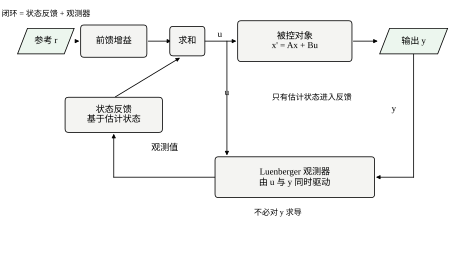
本章按四条线展开。第一条是原理线（54.2）：能控性、Ackermann 公式、对偶性、分离原理，最后说明为什么“输出反馈”做不到同样的事。第二条是操作线（54.3 到 54.5）：先给七步流程，再在连续域跑一遍，最后处理离散实现。第三条是判断线（54.6 到 54.9）：极点位置怎么换算成性能、增益的每个分量在干什么、调参经验、以及从“配极点”走向“最优”的路。第四条是落地线（54.10 到 54.12）：代码怎么写、上机前查什么、边界在哪。
读的时候有一个提醒：本章所有数字都来自 code/ch054_sim.py 的十四组报告，正文引用时会标出报告编号。图 54-2 是四组期望极点在复平面上的位置，后面反复用到。
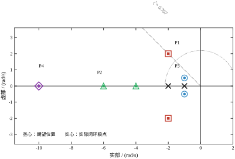
图中的空心标记是设计目标，实心小点是算完 K 之后实际的闭环极点，两者重合说明配置成功。P_3=-1\pm\mathrm{j}0.5 用的增益是负数（K=[-0.75,-1]），这是一个值得记住的反例：极点配置不保证增益的符号，负增益在物理上可能意味着反向执行，需要额外检查。
(54-1) 里的 2 与 3 不是随手写的，它们决定了开环的两个极点。对标准二阶分母 s^2+2\zeta\omega_n s+\omega_n^2 逐项对照，得自然频率与阻尼比
\omega_n=\sqrt{2}=1.414214\ \text{rad/s},\qquad \zeta=\frac{3}{2\sqrt{2}}=1.060660
\zeta>1 是过阻尼，两个极点都是实根：-1 与 -2。极点的绝对值就是衰减速率——极点在 -1，包络按 e^{-t} 衰减，时间常数 1 s，落到 5% 要 3/1=3 s，落到 2% 要 4.6/1=4.6 s。极点在 -2，时间常数 0.5 s，快一倍。整个系统的节奏由慢的那个决定，所以开环“稳定但慢”，说的就是 -1 这个极点。
再看 x_1 的具体形状。初值取 x_0=[1,\;0]（把质量块拉开 1 m 后松手），解析解是
x_1(t)=2e^{-t}-e^{-2t}
两个模态的系数分别是 2 与 -1：慢模态占了主导，快模态只起到“起手时抵消一下”的作用。这也解释了一个常见误解——“系统里有个 -2 的极点，所以能 0.5 s 稳定”是不对的，能稳定多快由最右的极点决定，不是由最快的极点决定。
现在把同一套换算用在设计目标上。P_1=-2\pm\mathrm{j}2 对应
\omega_n=\sqrt{2^2+2^2}=2.828427,\qquad \zeta=\frac{2}{\omega_n}=0.707107
\zeta=0.707 是教科书里最常引用的“最佳阻尼”，超调公式 (54-17) 给出 M_p=e^{-\pi}=0.043214，也就是 4.3%；调节时间 4.6/(\zeta\omega_n)=4.6/2=2.3 s。这两个数字与 §54.4 表 54-2 的实测值（过冲 0.043214、进带时间 2.3280 s）对得上。“把极点放到 -2\pm\mathrm{j}2”这句话，翻译成工程语言就是“超调 4.3%、2% 调节时间 2.3 s”，反过来也成立。 这一层翻译是本章所有调参讨论的公共语言：现场提“1 s 内稳住、超调别过 5%”，先换算成 \zeta 与 \omega_n，再换算成极点，才轮到 Ackermann 公式出场。
观测器的极点也可以用同一把尺子量。L=[19,\;61] 把 A-LC 的极点放到 -10 与 -12，对应时间常数 0.1 s 与 0.083 s，比闭环的 0.5 s 快五倍以上。这个“快五倍”不是巧合，而是 §54.8 那条经验规则的物理来源：观测器必须在控制器还没来得及用错估计值之前就把误差压下去，否则估计误差会被反馈放大成控制量的抖动。
§54.1.1 说过“差分会把噪声放大 1/T_s 倍”，这句话对，但不足以判死刑。差分器 H(z)=(z-1)/(T_sz) 的频率响应是
\left|H(e^{\mathrm{j}\omega T_s})\right|=\frac{2\sin(\omega T_s/2)}{T_s}
低频段 \sin(\omega T_s/2)\approx\omega T_s/2，增益就是 \omega，与理想微分完全一致；问题出在高频：\omega=\pi/T_s（奈奎斯特）处增益是 2/T_s，T_s=0.005 s 时高达 400。也就是说，差分对“有用的低频信号”是准确的，对“没用的高频噪声”放大 400 倍，真正的代价是把噪声折叠进了速度估计。
把这笔账算成数字。白噪声经过两点差分，输出 rms 是 \sigma\sqrt2/T_s。取 §54.10.6 的量化噪声 \sigma=0.044 mm，T_s=0.005 s，得 0.044\times1.414/0.005=12.4 mm/s。本例闭环的速度峰值是 1.289 m/s（4e^{-2t}\sin2t 的最大值，在 t=0.393 s 处），所以噪声占峰值的 0.96\%——不算好，但也不到“完全不能用”。若 T_s 缩到 0.001 s（为了更好的控制带宽），同样噪声变成 62 mm/s，占 4.8\%，开始明显影响 k_2 通道。这就是“1/T_s 放大”的真实含义：它不是随 T_s 变小而减小的，恰好相反。
真正让差分出局的是第二个条件：传感器噪声。量化只是噪声的一部分，真实位移传感器的噪声 rms 常在 0.1\sim0.5 mm 量级。取 0.5 mm，要让差分噪声不超过 5 mm/s，需要 T_s\ge0.5\times1.414/5=0.141 s；而按 §54.5.5 的 \omega_nT_s\le0.2，T_s=0.141 只能支持 \omega_n\le1.42，调节时间退到 4.6/(0.707\times1.42)=4.58 s。两条要求打架了：抑制差分噪声要求慢采样，控制性能要求快采样，中间没有交集。 这才是观测器的用武之地——它不是“更好的微分器”，而是一个“用模型预测 + 用测量修正”的估计器，噪声经过 L 的增益后还要经过一次积分才进入速度估计，天然带低通，不必在采样率上做妥协。
所以 §54.1.1 那句结论要加一个限定：噪声小、采样快时，差分是可行的临时方案；只要传感器噪声超过量化噪声一个量级，差分与性能要求就不可兼得。 判断方法是先算 \sigma\sqrt2/T_s，再与速度峰值比：低于 1\% 可以用，1\%\sim5\% 要谨慎，超过 5\% 必须上观测器。三个数字，一条线，比“差分不好”这种笼统说法有用得多。
极点配置能做成，前提是输入能“推动”每一个模态。这个性质叫能控性。对 n 维单输入系统，能控性矩阵
\mathcal{C}=\begin{bmatrix}B&AB&\cdots&A^{n-1}B\end{bmatrix} \tag{54-6}
满秩时称系统能控。本章对象 \mathcal{C}=\begin{bmatrix}0&1\\1&-3\end{bmatrix}，秩为 2，满秩。
秩判据用起来方便，但看不出“哪个模态推不动”。等价的 PBH 判据更直观：系统能控，当且仅当对 A 的每个特征值 \lambda，矩阵 [\lambda I-A,\;B] 行满秩。若某个 \lambda 使该矩阵降秩，说明存在一个左特征向量 v^{\mathsf T} 满足 v^{\mathsf T}B=0 且 v^{\mathsf T}A=\lambda v^{\mathsf T}——输入对这个模态完全无效，无论 K 怎么取，\lambda 都留在闭环里。
这个结论可以直接算出来：若 v^{\mathsf T}B=0，则 v^{\mathsf T}(A-BK)=v^{\mathsf T}A=\lambda v^{\mathsf T}，所以 \lambda 仍是 A-BK 的特征值。这就是“不能控的模态配不动”的完整证明，只要一行。
还有一条容易忽略的性质：状态反馈不改变能控性。 因为 \mathcal{C}(A-BK,B) 的每一列都可以由 \mathcal{C}(A,B) 的列线性组合得到，反之亦然（把 K 换成 -K 就还原）。所以“能控”是设计前的属性，不是设计后的结果。
单输入系统的能控标准型长这样：
A_c=\begin{bmatrix}0&1&0\\0&0&1\\-a_0&-a_1&-a_2\end{bmatrix},\qquad B_c=\begin{bmatrix}0\\0\\1\end{bmatrix} \tag{54-7}
它的特征多项式是 s^3+a_2s^2+a_1s+a_0，系数直接排在最后一行。取 K=[k_1,k_2,k_3]，则 A_c-B_cK 只改动最后一行：
A_c-B_cK=\begin{bmatrix}0&1&0\\0&0&1\\-a_0-k_1&-a_1-k_2&-a_2-k_3\end{bmatrix} \tag{54-8}
特征多项式变成 s^3+(a_2+k_3)s^2+(a_1+k_2)s+(a_0+k_1)。想让它等于期望的 \phi(s)=s^3+\phi_2s^2+\phi_1s+\phi_0，只需
k_1=a_0-\phi_0,\qquad k_2=a_1-\phi_1,\qquad k_3=a_2-\phi_2 \tag{54-9}
在标准型下，极点配置就是逐项对齐系数，没有任何技巧。
一般的 (A,B) 通过相似变换化到标准型：取 T=\mathcal{C}\,S，其中 S 是由特征多项式系数构成的右三角矩阵。因为相似变换不改变特征值，在 T^{-1}AT、T^{-1}B 上算出 K_c 之后，原坐标下的增益是 K=K_cT^{-1}。这就是“先换坐标、再逐项对齐、最后换回来”的三步。
上面的三步需要显式构造 T 与 S，高阶时数值上很脆。Ackermann 公式把这三步合成一个矩阵多项式：
K=\begin{bmatrix}0&\cdots&0&1\end{bmatrix}\mathcal{C}^{-1}\phi(A) \tag{54-10}
它的正确性可以用标准型验证。在标准型下 \mathcal{C}_c=I（因为 B_c 逐列移位），公式退化成 K_c=e_n^{\mathsf T}\phi(A_c)。而 \phi(A_c) 的最后一行恰好是 [a_0-\phi_0,\;a_1-\phi_1,\;a_2-\phi_2]——正是 (54-9)。由于两边都是相似变换下的协变量，标准型成立就意味着一般情形成立。
公式里的 \phi(A) 用 Horner 法算，不需要求矩阵的幂次。脚本对本章对象验证：对 P_1 得到的 K=[6,1] 与 scipy.signal.place_poles 的结果最大差 2.665\times10^{-15}；P_2 差 1.776\times10^{-15}；P_3 差 2.220\times10^{-16}。三组都在机器精度量级，说明两条独立路径给出了同一个答案。
Ackermann 公式的代价是 \mathcal{C}^{-1}。能控性矩阵在高阶时条件数极差，n=10 以上通常直接放弃它，改用 place_poles 那种基于特征结构的方法，或者干脆用第 55 章的最优控制。这一点在 §54.9 还会提。
把 (54-4) 转置：\dot e^{\mathsf T}=e^{\mathsf T}(A^{\mathsf T}-C^{\mathsf T}L^{\mathsf T})。若把 A^{\mathsf T} 看作“系统矩阵”、C^{\mathsf T} 看作“输入矩阵”，L^{\mathsf T} 就是状态反馈增益。于是
L=\big(\text{Ackermann}(A^{\mathsf T},C^{\mathsf T},p)\big)^{\mathsf T} \tag{54-11}
观测器存在的条件是 (A,C) 能观，即能观性矩阵 \mathcal{O}=[C;CA;\cdots;CA^{n-1}] 满秩，等价地 [(\lambda I-A)^{\mathsf T},C^{\mathsf T}] 列满秩。本章对象 \mathcal{O}=\begin{bmatrix}1&0\\0&1\end{bmatrix}，秩 2。
手算一遍可以看清结构。设 L=[l_1,l_2]^{\mathsf T}，则
A-LC=\begin{bmatrix}-l_1&1\\-2-l_2&-3\end{bmatrix} \tag{54-12}
特征多项式是 s^2+(l_1+3)s+(3l_1+2+l_2)。要极点 -5,-6，期望多项式 s^2+11s+30，得 l_1=8、3\times8+2+l_2=30 即 l_2=4，所以 L=[8,4]^{\mathsf T}。要极点 -10,-12，得 L=[19,61]^{\mathsf T}。第二组的分量比第一组大得多，这个增长在后面会被噪声放大成实际代价。
回到 (54-5)。以 (x,e) 为坐标，闭环矩阵是上三角的，所以
\det(sI-\bar A)=\det(sI-A+BK)\cdot\det(sI-A+LC) \tag{54-13}
特征多项式相乘，特征值取并集。稳定性判据因此可以拆成两个独立条件：A-BK 稳定、A-LC 稳定。
需要强调的是，分离原理是结构性的，与 K、L 的具体数值无关。只要观测器写成 (54-3) 那种“模型 + 输出误差修正”的形式，三角结构就成立。这也解释了为什么工程上可以先把控制器调好、再补观测器，而不必回头重调控制器。
但分离原理有两个前提容易被忽略。第一，u 必须同时进入对象与观测器，若观测器里用的 u 与真实加到对象上的 u 不同（例如限幅之后的 u 才送进对象，观测器却用了限幅前的值），三角结构就被破坏，误差动态里会多出一项 B(u_{obj}-u_{obs})。第二，分离原理只管特征值，不管幅值；观测器误差会通过 BK 通道进入状态，误差大时控制量会先“抖”一下，这一点在 §54.6.3 有定量说明。
若不用观测器，直接取 u=-ky，闭环矩阵是 A-kBC。对本章对象，BC=\begin{bmatrix}0&0\\1&0\end{bmatrix}，于是
A-kBC=\begin{bmatrix}0&1\\-2-k&-3\end{bmatrix},\qquad \det(sI-A+kBC)=s^2+3s+(2+k) \tag{54-14}
只有一个可调参数 k，却要定两个极点。一次项系数恒为 3，所以两个极点之和恒等于 -3，无论 k 取多少。脚本扫了 k\in[-1.9,200] 共两万个点，瞄准 -2\pm\mathrm{j}2（和为 -4）时，最近只能到 -1.5\pm\mathrm{j}1.999464，距离 0.5，对应 k=4.2479。
这不是本章对象的特例。m 个输入、p 个输出时，静态输出反馈只有 mp 个自由参数，一般小于 n，所以只能配 m 个（更准确地说，generic 情形下最多 \min(n,mp) 个但通常更少）极点。要恢复全部自由度，必须让控制器“带记忆”——观测器就是给输出反馈加上 n 阶动态，把 mp 个参数扩成 n 个。
图 54-3 画出了这条可达轨迹：一条竖直线，k 从 -1.9 增到 200 时两个极点沿 -1.5 上下跑，永远碰不到 -2\pm\mathrm{j}2。
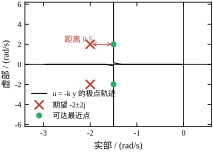
这条竖线还说明一件事：闭环阻尼可以调，闭环“衰减率”调不了。工程上如果只测得到一个输出、又要求指定的衰减率，静态输出反馈必然失败，必须上观测器或加大动态补偿。
\mathrm{rank}\,\mathcal{C}=n 只回答“能不能”，不回答“有多勉强”。计算上更可信的指标是能控性矩阵的最小奇异值，或者更几何化的距离不能控
\mathrm{dist}(A,B)=\min_{\lambda\in\mathbb{C}}\ \sigma_{\min}\big([\lambda I-A,\;B]\big)
它在 \lambda 取遍复平面时衡量“是否存在某个模态几乎推不动”。本章对象在 \lambda 的实部虚部各扫 401 点的网格上给出 0.373198；\mathcal{C}=\begin{bmatrix}0&1\\1&-3\end{bmatrix} 的行列式是 -1、条件数 10.908327。这两个数字合起来说明：对象不但能控，而且离边界不算近，\mathcal{C}^{-1} 不会把误差放大太多——这正是 §54.2.3 里 Ackermann 与 place_poles 能对到 10^{-15} 量级的前提。
但\mathrm{cond}(\mathcal{C}) 小并不等于设计结果稳健，这一点常被误读。拿三重积分器做对照：它的能控性矩阵就是单位矩阵，条件数 1，看上去是最良态的对象。把极点配成三重 -1，得 K=[1,3,3]、\|K\|=4.358899；改成 -1,-2,-3，得 K=[6,11,6]、\|K\|=13.892444。按“增益越小越省力”的直觉，前者更好。可是报告 12 给出了相反的证据：
| 指标 | 三重 -1 | 分散 -1,-2,-3 |
|---|---|---|
| \mathrm{cond}(V)（闭环特征向量矩阵） | 9.919618\times10^{10} | 50.109390 |
| \max_t\|\exp(A_ct)\|_2 | 1.390573 | 1.841423 |
| A 加 1% 摄动后极点平均位移 | 0.337008 | 0.192120 |
三重极点把特征向量矩阵的条件数推到 10^{11} 量级，A 有 1% 的误差，极点就平均跑掉 0.337——比目标间距还大。原因不复杂：特征值重合时特征向量趋于平行，V 接近奇异，闭环里出现 te^{-t} 这样的多项式乘指数项，系统对参数误差的敏感度随 t 线性增长。有意思的是它的轨迹峰值反而更小（1.390573 对 1.841423），这提醒我们：“阶跃响应好看”与“参数稳健”是两件独立的事，前者看 \max_t\|\exp(A_ct)\|，后者看 V 的条件数。
工程上的结论有三条。第一，除了一阶系统或特殊构造，不要配重极点，想让某个方向更快的正确做法是把极点沿实轴拉开。第二，判断“能不能配”不要只看秩，要看 \mathrm{dist}(A,B) 与 \mathrm{cond}(\mathcal{C})；第三，判断“配完稳不稳”要看闭环特征向量矩阵的条件数，或者干脆做一次 1% 摄动的蒙特卡洛，像报告 12 那样取 200 次的平均位移。这三种检查在 §54.6 的鲁棒性一节还会用到。
本章一路用单输入，容易留下一个错误印象：极点配置的自由度就等于 n。实际不是——自由度是 K 的元素个数 mn，而约束只有 n 个（特征多项式的 n 个系数）。单输入时 mn=n，恰好一一对应，所以解唯一；多输入时 mn>n，就有 mn-n 个剩余自由度。
剩余自由度先带来一个立竿见影的好处：重极点不再被禁止。单输入时一个极点最多重复一次，所以 §54.3.3 里 P_4=(-10,-10) 被 place_poles 直接拒绝；多输入时上限变成 \mathrm{rank}(B)，只要两个输入的方向不重合，二重极点就可以配。把本章对象改成双输入 B=I，目标二重极点 -2，取
K=A+2I=\begin{bmatrix}2&1\\-2&-1\end{bmatrix},\qquad A-BK=-2I
A-BK 直接是一个纯量矩阵，二重极点 -2、特征向量矩阵取单位阵即可，条件数为 1。同样的二重极点，单输入的解只能是 K=[2,1]，对应 A-BK=\begin{bmatrix}0&1\\-4&-4\end{bmatrix}——一个 Jordan 块，特征向量矩阵奇异（§54.2.7 的 10^{10} 量级条件数就是这么来的）。同样一对重极点，单输入只能得到最坏的特征结构，多输入却能得到最好的那一个，差别全部来自多出来的那两个自由度。
剩余自由度的第二个用途更实用：在不改变极点的前提下压低增益。极点只约束特征多项式的系数，不约束特征向量；而增益范数、峰值推力、噪声敏感度都依赖特征向量。于是可以在“极点固定”的约束下，把 \|K\| 或某个加权范数当目标做二次优化，得到一个“同样快但更省力”的 K。上面那个 K=A+2I 是个极端的例子：它的范数是 3.162，而单输入的 K=[2,1] 范数是 2.236，这里反而是单输入更小——说明“多输入一定更省力”也不成立，得看具体目标和约束。真正的收益是你有得选，而不是“答案自动更好”。这条思路的极端版本就是 LQR——它不再指定极点，而是直接优化一个包含控制代价的指标。
第三个用途是容错。双输入时若一个执行器失效，剩下的单输入往往仍能配出可用的极点（虽然慢一些），这被称为“控制重构”。单输入系统一旦执行器坏了，能控性立刻丢失，没有任何补救空间。工程上冗余执行器的价值，一半在这里。
也要说清代价。多输入让 K 变成 m\times n 的矩阵，标定与调试的维度上升；每个执行器还有自己的量程与速率限制，抗饱和逻辑从“一条”变成“m 条”，彼此之间可能互相打架。所以“多输入更好”只在自由度确实被用到时成立——如果只是把单输入的结果复制到两个执行器上（K 的两行相同），那多出来的自由度一分没花，反而多了一倍的故障点。
图 54-4 是本章建议的流程。左列是状态反馈，右列是观测器与实现，中间有一个判断：算出来的增益能不能被执行器接受。
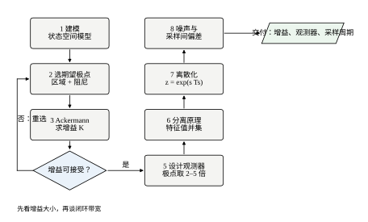
第一步是建模，拿到 (A,B,C)。第二步选期望极点，这一步最费经验，下面单独说。第三步用 Ackermann 或 place_poles 求 K。第四步必须核对 |K|：它不是数学量，而是“每 1 m 位移偏差要出多少牛顿”，超出量程就是不可实现。若不可接受，回到第二步把极点往右挪，而不是硬着头皮往下走。
第五步设计观测器。第六步把两个特征值集合拼起来核对分离原理——这一步在数值上几乎不会失败，但它能抓出“观测器里用的 u 和对象实际收到的 u 不一致”这类实现错误，因为那时 4\times4 矩阵不再是三角的，极点会跑偏。第七步离散化，第八步做噪声与采样间偏差的验收。
工程上很少直接说“我要 -2\pm\mathrm{j}2”，一般给的是时域指标：超调量、上升时间、调节时间。二阶系统的换算关系是标准的：
\zeta=\frac{-\ln M_p}{\sqrt{\pi^2+\ln^2M_p}},\qquad \omega_n=\frac{4}{\zeta\,t_s}\ \ (\text{2\% 准则}) \tag{54-15}
极点位置由 \zeta 与 \omega_n 决定：
s_{1,2}=-\zeta\omega_n\pm\mathrm{j}\,\omega_n\sqrt{1-\zeta^2} \tag{54-16}
例如要求超调 10\%、调节时间 2 s，算得 \zeta\approx0.59、\omega_n\approx3.4，极点约 -2\pm\mathrm{j}2.8。本章的 -2\pm\mathrm{j}2 对应 \zeta=0.707、\omega_n=2.83，调节时间约 2 s、超调约 4.3\%。
除了这对主极点，还有三条经验。
不要把所有极点放在同一点。 三重极点会让特征向量矩阵接近奇异。脚本对三重积分器实测：三个极点都取 -1 时，特征向量矩阵的条件数是 9.92\times10^{10}；改成 -1,-2,-3 后降到 50.1。相应地，A 加 1\% 摄动后，三重极点的平均最大位移是 0.337，分散极点只有 0.192。差了 1.75 倍——这还是在 1\% 的小摄动下。
实部不要超过执行器带宽，也不要超过采样频率的五分之一。 极点实部决定了闭环带宽的量级；带宽超过执行器能响应的范围，模型里的 B 就不再成立，配出来的极点只是纸面上的。
留一对“慢极点”给积分器或慢模态。 如果系统里有需要积分消除静差的通道，那个模态的极点通常由抗饱和逻辑决定，不该被状态反馈强行拉快。
Ackermann 公式（54-10）适合手算与教学，n\le4 时数值也够用。它的两个缺点是：需要 \mathcal{C}^{-1}，以及不能处理重极点（公式本身可以，但 \mathcal{C} 在高阶时条件数会让结果失真）。脚本对 P_4=(-10,-10) 就没法与 place_poles 对比，因为后者直接拒绝重极点超过 \mathrm{rank}(B) 的请求：at least one of the requested pole is repeated more than rank(B) times。
scipy.signal.place_poles 用的是特征结构配置，允许指定哪些极点必须精确、哪些可以放宽，高阶时稳得多。工程代码里建议用它，只在需要向别人解释“这个增益怎么来的”时手算一遍 Ackermann。
两者在低阶、互异极点时的结果完全一致：P_1 差 2.665\times10^{-15}，P_2 差 1.776\times10^{-15}，P_3 差 2.220\times10^{-16}。这个量级就是双精度的舍入误差，说明两条路径没有算法上的分歧。
常用规则是“比闭环极点快 2 到 5 倍”。本章取闭环 -2\pm\mathrm{j}2、观测器 -10,-12，实部比是 5 到 6 倍，略超常规，是为了让图 54-7 的收敛曲线分得开。
这条规则的道理在误差动态：观测误差按 e^{-10t} 衰减，而状态按 e^{-2t} 衰减。误差衰减得快，意味着“控制刚开始动作时估计已经准了”，观测器引入的相位滞后小。若两者一样快，误差与状态同数量级，闭环响应会明显偏离设计值。
规则的例外有两个。一是测量噪声大，此时应把观测器放慢，宁可让估计滞后也不要放大噪声（§54.6.4 有定量曲线）。二是对象有右半平面零点或明显延迟，观测器过快会把延迟造成的相位损失放大成振荡。
表 54-1 是本章建议的六项检查，每项都给出本章对象的具体数字作为参照。
| 检查项 | 通过标准 | 本章数字 |
|---|---|---|
| 能控性矩阵秩 | 等于 n | 2（满秩） |
| 闭环极点复算 | 与期望差 <10^{-8} | 4.16\times10^{-17}（离散情形） |
| 增益范数 | 在执行器量程内 | \|K\|=6.08（对应 -2\pm\mathrm{j}2） |
| 控制能量 | 与预算同量级 | \int u^2dt=8.5 |
| 观测器速度 | 闭环的 2–5 倍 | 5–6 倍 |
| 分离原理 | 并集与整体一致 | 偏差 0 |
最后还有一项不在表里但必须做：把 K 与 L 代回离散代码跑一遍。连续域算得再准，离散实现里漏掉一个 T_s 或把 L 的修正项少乘 dt，都会让观测器发散。本章脚本在调试时踩过这个坑，见 §54.8.6。
流程走到第四步常常卡住：按指标算出来的增益，执行器给不起。这里把本章对象的账摊开算一遍。现场给的要求是“超调不超过 5%、2 s 内进 1% 带、执行器 ±5 N”，建模得到 (54-1)。先把前两条换成 \zeta 与 \omega_n：超调 5% 对应 \zeta=0.690，取常用的 0.707 更稳一点；t_s=2 s 按 (54-15) 给 \omega_n=2.83，正是 P_1。然后不急着定案，把 \omega_n 沿 1.5\to2.83 扫一遍，看指标怎么变：
| \omega_n | 期望极点 | K | \max\lvert u\rvert | \int u^2dt | 进入 1% 带 | 反向过冲 |
|---|---|---|---|---|---|---|
| 1.5000 | -1.0607\pm\mathrm{j}1.0607 | [0.25,\ -0.8787] | 0.7720 | 0.6733 | 4.390 s | 0.043214 |
| 2.0000 | -1.4142\pm\mathrm{j}1.4142 | [2.00,\ -0.1716] | 2.0253 | 2.4853 | 3.292 s | 0.043214 |
| 2.5000 | -1.7678\pm\mathrm{j}1.7678 | [4.25,\ 0.5355] | 4.2500 | 5.6407 | 2.634 s | 0.043214 |
| 2.8284 | -2.0000\pm\mathrm{j}2.0000 | [6.00,\ 1.0000] | 6.0000 | 8.5000 | 2.328 s | 0.043214 |
这张表有三列值得盯。第一，反向过冲四行完全相同（0.043214），因为四行的 \zeta 都是 0.707。 超调只由阻尼比决定，与 \omega_n 无关，这是 (54-17) 的直接推论，也是把“超调”与“快慢”分开调的根据：要改超调就动 \zeta，要改快慢就动 \omega_n，两者不耦合。第二，进带时间随 \omega_n 单调缩短（4.390 → 2.328 s），而且与 \omega_n 大致成反比：\omega_n 从 1.5 提到 2.83（1.89 倍），时间从 4.390 降到 2.328（1.89 倍）。这不是巧合，四行的 \zeta 相同，调节时间就是 4.6/(\zeta\omega_n)。第三，峰值控制量几乎等于 k_1（0.7720 对 0.7720、6.0000 对 6.0000），这与 §54.4 的 (54-19) 是同一件事：控制峰值出现在 t=0，此时 x_2=0，u=-k_1x_1。
对账的结果是：\omega_n=2.83 的峰值 6.00 N 超出 \pm5 N 的量程，按流程必须回到第二步。退到 \omega_n=2.5，峰值 4.25 N 在量程内，代价是进带时间从 2.328 变成 2.634 s，“2 s 内到位”这条指标就守不住了。要么把执行器换到 \pm7 N，要么接受 2.6 s，二选一，没有第三条路。这就是极点配置的真实工作方式：不是解一个方程，而是在指标、量程、噪声之间做三方对账。 顺带一提，\omega_n=1.5 那一行的 k_2=-0.8787 是负数，意味着“速度反馈”变成了正反馈——数学上仍然稳定（极点实部 -1.0607），但一旦速度估计有偏，这一项会把偏差推向同方向，工程上应当避免，这与 §54.1 里 P_3 的负增益是同一类问题。
极点不能想放哪儿就放哪儿。除了 §54.8.8 会算的量程与采样，还有两条边界经常被忽略：执行器带宽与延迟。四条边界都是 \omega_n 的上界，取最小值就是可用范围。
第一条，执行器带宽。 执行器不是理想力源，通常有一阶惯性 1/(\tau_as+1)。闭环要求执行器跟得上指令，经验判据是 \omega_n\le1/(3\tau_a)：\tau_a=0.05 s 时上界 6.67 rad/s。这条边界在液压与气动系统上特别紧，\tau_a 常到 0.1 s 量级，上界只剩 3.3。
第二条，延迟。 纯延迟 \tau_d 带来的相位损失约 \omega_n\tau_d，要求它不超过 0.2 rad（约 11^\circ）以免吃掉全部裕度，于是 \omega_n\le0.2/\tau_d。\tau_d=0.02 s 时上界 10 rad/s；\tau_d=0.05 s 时上界 4。
第三条，采样。 就是 §54.5.5 的 \omega_nT_s\le0.2，T_s=0.05 s 时上界 4。
第四条，量程。 由 (54-20) 与 (54-18)，|u(0)|=k_1=\omega_n^2-2\le u_{\max}，所以 \omega_n\le\sqrt{u_{\max}+2}。u_{\max}=5 N 时上界 2.646。
把本例的四个数排起来：6.67、4、4、2.646，最小值是 2.646，来自量程。所以本例的极点选择是被执行器卡住的，不是被理论卡住的。这个结论有很强的行动含义：再怎么优化算法、提高采样率、换更好的传感器，都不会让响应变快，唯一的出路是换更大的执行器或者放宽指标。若换一个 \pm20 N 的执行器，上界变成 \sqrt{22}=4.69，此时瓶颈转移到采样与延迟（都是 4），继续加大执行器也没有用了——瓶颈会随着参数改变而在四条边界之间迁移，设计者的任务就是找出当前是哪一条在卡。
还有一个容易忽略的细节：四条边界里，只有量程那条与初值有关。|u(0)|=k_1x_1(0)，上面算的是 x_1(0)=1 m 的情形；若现场从 3 m 起步，同样的量程对应的上界要按 \sqrt{u_{\max}/3+2}=\sqrt{3.667}=1.915 算（§54.10.9 用过这个数）。讨论“极点能放多快”之前，必须先说清“从多远的地方起步”，否则算出来的上界没有意义。
上一小节是从 \omega_n 正着算指标，现场更常见的是反着来：需求文档给一个调节时间，要你交出 K。把 \zeta 固定成 0.707，用 2% 判据 t_s=4/(\zeta\omega_n) 反解 \omega_n=4/(\zeta t_s)，再套 §54.7 的换算式，得到表 54-3。
| 要求 t_s | \omega_n | K=[k_1,\ k_2] | \max\lvert u\rvert | \int u^2dt |
|---|---|---|---|---|
| 1.0 s | 5.656854 | [30.000000,\ 5.000000] | 30.000000 | 68.750000 |
| 1.5 s | 3.771236 | [12.222222,\ 2.333333] | 12.222222 | 20.754630 |
| 2.0 s | 2.828427 | [6.000000,\ 1.000000] | 6.000000 | 8.500000 |
| 2.5 s | 2.262742 | [3.120000,\ 0.200000] | 3.120000 | 3.971000 |
| 3.0 s | 1.885618 | [1.555556,\ -0.333333] | 1.555556 | 1.953704 |
| 4.0 s | 1.414214 | [0.000000,\ -1.000000] | 0.000000 | 0.500000 |
表中前五列全部由实跑给出，但它们的结构可以手推。\zeta=1/\sqrt2 时 \zeta^2=1/2，于是
k_1=\omega_n^2-2=\frac{32}{t_s^2}-2,\qquad k_2=2\zeta\omega_n-3=\frac{8}{t_s}-3
两式的标度不同：忽略常数项时 k_1 按 t_s^{-2} 涨、k_2 按 t_s^{-1} 涨。但在 1–4 s 这个区间，常数项 -2 与 -3 占比很大，实际比值被拉平了：从 4 s 收到 2 s，k_1 从 0 到 6、k_2 从 -1 到 1；再从 2 s 收到 1 s，两者都涨 5 倍（6\to30、1\to5）。所以在这个区间里“位置环比速度环更吃增益”的说法并不成立，真正按平方吃紧的是能量，不是增益本身。
再看最后一列。t_s 从 2 s 收到 1 s，能量从 8.500000 涨到 68.750000，是 8.09 倍。作为对照：若极点不动、只把 K 整体放大 5 倍，\int u^2dt=\int x^{\mathsf T}K^{\mathsf T}Kx\,dt 会涨 25 倍；这里极点同时变快、状态衰减更早，才落到 8.09 倍。在需求文档上把“2 s”改成“1 s”只需要改一个字，执行器要换六倍、能量要备八倍。 遇到“再快一点”的要求，先把这张表贴出来。
表 54-5 末行还有两个陷阱。第一，k_1=0，位置反馈整个消失了，控制律退化成 u=-k_2x_2=x_2——正速度反馈，靠对象自身的弹簧 -2 提供回位，控制只把阻尼从 3 削到 2，闭环极点是 -1\pm\mathrm{j}。这种设计能稳（实部 -1），但任何常值扰动都会留下 1/\omega_n^2=0.5 m 的静差，而且“削阻尼”方向一错就翻成不稳定，工程上不能接受。第二，k_2=-1 是负增益，与 §54.3.6 提到的 \omega_n=1.5 那一行同病。所以 4 s 这一行只能当作“再慢就出界”的边界参照，不能真拿去上机。
最后提一个报告口径的坑：同一组极点，按 2% 判据报出的时间比按 5% 判据长 33%。例如 \omega_n=1.414214，2% 判据说 4.0 s，5% 判据说 3.0 s（3/(\zeta\omega_n)），两者是同一个闭环。验收时只写“调节时间 3 s”而不写判据，等于把指标放宽了三分之一。
前三节讲的是“怎么算”，这一节讲“算出来长什么样”。同一个对象、同一个初值 x_0=[1,0]^{\mathsf T}，把四组极点全部跑一遍，看位移轨迹、控制量、能量与观测器误差。数字来自 ch054_sim.py 的报告 1 至报告 4。
表 54-2 把六项指标摆在一起。
| 期望极点 | K | \|K\| | 进入 1% 带 | 反向过冲 | \int u^2dt | \max\lvert u\rvert | N |
|---|---|---|---|---|---|---|---|
| -2\pm\mathrm{j}2 | [6,\ 1] | 6.083 | 2.328 s | 0.043214 | 8.500 | 6.00 | 8.00 |
| -4,\ -6 | [22,\ 7] | 23.087 | 1.414 s | 0 | 29.833 | 22.00 | 24.00 |
| -1\pm\mathrm{j}0.5 | [-0.75,\ -1] | 1.250 | 4.514 s | 0.001867 | 0.153 | 0.75 | 1.25 |
| -10,\ -10 | [98,\ 17] | 99.464 | 0.662 s | 0 | 257.000 | 98.00 | 100.00 |
“进入 1% 带”指 |x_1| 最后一次超过初值 1% 的时刻。“反向过冲”指位移越过零之后的负向最大偏移。
第一行那个 0.043214 不是巧合。二阶系统在阻尼比 \zeta 下的经典超调公式是
M_p=\exp\left(-\frac{\pi\zeta}{\sqrt{1-\zeta^2}}\right) \tag{54-17}
P_1=-2\pm\mathrm{j}2 的 \zeta=1/\sqrt2，代入得 e^{-\pi}=0.043214，与仿真值六位有效数字全同。P_3=-1\pm\mathrm{j}0.5 的 \zeta=0.894，(54-17) 给 0.001867，仿真实测也是 0.001867。这说明“极点位置到阶跃指标”的换算在本对象上完全成立，不是近似。
P_2 与 P_4 是实极点，\zeta\ge1，理论上不过冲，实测那一列是 0，与理论一致。P_4 最快，0.662 s 进带，也是四组里唯一 place_poles 拒绝求解的（§54.3.3）。
图 54-5 把前三组的位移与控制量画在一起。
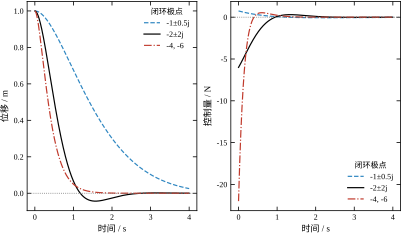
左图上 P_3 直到 4.5 s 才进入 1% 带，P_2 在 1.4 s 就进了。右图的对比更直接：P_3 的控制量全程不到 1 N，P_2 一上来就是 22 N，起点高度差了三十倍。
表 54-2 里 \max|u| 一列恰好等于 |k_1|：6、22、0.75、98。原因是初值只有位移、没有速度，x_2(0)=0，于是
u(0)=-Kx_0=-k_1x_1(0) \tag{54-18}
位移初值为 1，控制量的第一拍就是 -k_1。之后 x_1 单调衰减、x_2 先增后减，\|x(t)\| 由闭环极点主导，|u| 再没有超过第一拍。
这条观察有直接的工程用法：选极点之前先估 k_1，它就是执行器峰值的下界。本例中 k_1 恰好等于峰值，不需要跑仿真就能判定量程够不够。
固定 \zeta=0.707，只把 \omega_n 从 1 扫到 20，报告 2 给出：
为什么是“增益平方、能量立方”？本对象的闭环特征多项式可以逐项写出：
\det(sI-A+BK)=s^2+(3+k_2)s+(2+k_1) \tag{54-19}
对齐标准二阶 s^2+2\zeta\omega_n s+\omega_n^2，得到两个分量的闭式：
k_1=\omega_n^2-2,\qquad k_2=2\zeta\omega_n-3 \tag{54-20}
\omega_n 大时 k_1\approx\omega_n^2，故 \|K\|\approx\omega_n^2；控制能量正比于 k_1^2 再乘以衰减时间 1/(\zeta\omega_n)，即 \omega_n^4/\omega_n=\omega_n^3。20^3=8000，实测 7852，相差 1.9%，差的那一点正是 (54-20) 里的 -2 与 -3 偏移项。中间点也对得上：\omega_n=5 时 \int u^2=47.881536，而 0.363961\times5^3=45.5。
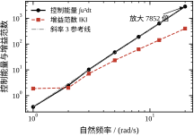
图 54-6 中灰虚线斜率为 3，能量曲线紧贴它。这意味着每快一倍，能量涨 8 倍。把 \omega_n 从 5 提到 10 只省一半调节时间，代价是 8 倍能量与 4 倍峰值推力。极点配置给出的“性能”不是免费的，这是它最容易被忽略的一面。
P_3 的 K=[-0.75,-1]。按 u=-Kx 展开：
u=0.75x_1+x_2 \tag{54-21}
位移项系数为正，位移越大越往前推——这是正反馈。物理上并不荒谬：开环极点在 -1,-2，阻尼比 3/(2\sqrt2)=1.06，是过阻尼的；要把极点挪到 -1\pm\mathrm{j}0.5，必须减小阻尼，也就是“帮着”它振动。
用 (54-19) 看最清楚。目标多项式 s^2+2s+1.25，原多项式 s^2+3s+2。s 的系数要从 3 降到 2，所以 k_2=-1；常数项要从 2 降到 1.25，所以 k_1=-0.75。K 的每个分量是“目标系数减原系数”，符号取决于两个系数的大小关系，并不表示“反馈强度”。
这也印证了 §54.2.5 的那条限制：极点配置只管特征值，不管增益的物理含义。若执行器只能单向出力（只能加热不能制冷），负增益实现不了，只能重选极点。
u=-Kx 把极点挪好了，但不保证跟踪：闭环 x'=(A-BK)x 对任意非零常值参考，稳态解都不为零。加一条前馈通道即可：
u=-Kx+Nr,\qquad N=\frac{-1}{C(A-BK)^{-1}B} \tag{54-22}
四组极点算得 N=8、24、1.25、100，与 \det(A-BK) 逐位相等（8.000000、24.000000、1.250000、100.000000）。这是本例的结构巧合：C=[1,0]、B=[0,1]^{\mathsf T}，且 A-BK 的右上元素恒为 1，于是 C(A-BK)^{-1}B=-1/\det。换了 (A,B,C) 就不成立，别当通式。
若用第 44 章的积分器代替前馈，N 就不必要了——积分作用会自动把稳态误差压到零，代价是多一个状态、多一个需要整定的增益。
前面所有轨迹都假定全状态可测，实际只有 y=x_1。把观测器 (54-3) 接进去，u=-K\hat{x}，误差动态 (54-4) 与原状态按分离原理互不干扰。
图 54-7 是速度估计误差的三条曲线，初值 e_0=[1,-1]^{\mathsf T}，误差极点分别取 -5,-6、-10,-12、-20,-25。
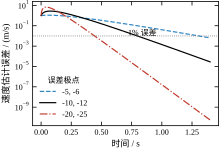
误差落到 1% 的时间是 0.9210 s、0.4605 s、0.2303 s，几乎精确地每次减半。而增益范数是 8.944272、63.890531、374.363460，涨了 7.1 倍和 5.9 倍。收敛快一倍，增益涨五六倍，这个不对称是观测器设计的核心矛盾：
§54.6.4 给出这条权衡的定量版本，图 54-10 是它的曲线。
图中还藏着一个必须点明的现象：初值 e_0=[1,-1] 对应“观测器从零状态起步、真实状态从 [1,0] 起步”，第一拍 y-\hat{y}=1，修正项 L\cdot1 立刻给出一个跳变，L 越大跳得越狠（第三组 L 的第一分量是 42）。这叫观测器的 peaking，工程上要在观测器输出后加限幅，否则启动瞬间就把执行器打满。
y=x_1 已经测到了，没必要再估一遍。降维观测器只估 x_2，阶数从 2 降到 1。取误差极点 -6，报告 4 给出
w'=-6w-20y+u,\qquad \hat{x}_2=w+3y \tag{54-23}
这两个系数不是凑的。设 \hat{x}_2=w+ly，误差 e_2=x_2-\hat{x}_2 满足 e_2'=-(3+l)e_2，要极点 -6 就得 l=3；把 l=3 代回 w 的方程，y 的系数就是 -(6\times3+2)=-20。
作为对照，把全维观测器的两个极点都放在 -6 得 L=[9,7]，\|L\|=11.401754；降维版本只用了一个数 l=3。自由度少一半，可见降维的收益不在增益大小，而在不重复估计已知量。
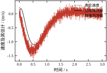
图 54-8 里三条曲线：真实速度（灰）、全维观测器（黑）、降维观测器（红虚）。全维那条启动时有一个明显的尖峰，降维的更快贴合。
降维也有代价：输出方程 \hat{x}_2=w+3y 把 y 直接乘 3 加进估计，y 上的噪声不经任何积分就出现在 \hat{x}_2 上。全维观测器里噪声要先经过 \int L(y-\hat y)\,dt 才影响状态，等于自带走低通；降维这条通路是纯代数直通，没有任何滤波。这是结构上的差异，§54.6.4 会用到。
二阶系统的闭环轨迹可以写成闭式，用来给仿真做逐点校验。P_1 的闭环矩阵是 A-BK=\begin{bmatrix}0&1\\-8&-4\end{bmatrix}，极点 -2\pm\mathrm{j}2，初值 x_0=[1,0]。设 x_1=e^{-2t}(a\cos2t+b\sin2t)，由 x_1(0)=1 得 a=1，由 x_1'(0)=x_2(0)=0 得 b=1，于是
x_1(t)=e^{-2t}\left(\cos2t+\sin2t\right),\qquad x_2(t)=-4e^{-2t}\sin2t
这两个式子把表 54-2 里几个数字的来源说清了。第一，反向过冲出现的时刻：令 x_1'=0 得 \sin2t=0，第一个非零解是 2t=\pi，即 t=\pi/2=1.570796 s，此时 x_1=-e^{-\pi}=-0.043214。表 54-2 里的 0.043214 就是 e^{-\pi} 本身，不是“仿真出来的近似值”。第二，控制量的形状：代入 u=-6x_1-x_2 得
u(t)=-e^{-2t}\left(6\cos2t+2\sin2t\right)
t=0 时 u=-6，与 (54-18) 一致。对它求导，u'=-8e^{-2t}(\cos2t+2\sin2t)，零点在 \tan2t=-1/2 处，对应 t\approx1.339 s，那里的 |u| 只有 0.307——远小于起点。所以“峰值在 t=0”在本例是可以解析证明的，不必靠扫描。
第三，能量恰好是有理数。 解 Lyapunov 方程 (A-BK)^{\mathsf T}W+W(A-BK)=-K^{\mathsf T}K，设 W=\begin{bmatrix}a&b\\b&c\end{bmatrix}，逐项展开得三个方程 -16b=-36、2b-8c=-1、a-4b-8c=-6，解得 b=2.25、c=0.6875、a=8.5。于是
W=\begin{bmatrix}8.5&2.25\\2.25&0.6875\end{bmatrix},\qquad J=x_0^{\mathsf T}Wx_0=8.5
表 54-2 里 \int u^2dt=8.500 因此是精确值 17/2，不是数值积分的估计。脚本里 cl_energy() 用同样的方程求，输出保留六位小数恰好是 8.500000。
这段验算的价值不在于“多算了一遍”，而在于给了一个独立于仿真的参照：轨迹公式来自特征值，能量公式来自 Lyapunov 方程，两者与时间步长、积分方法完全无关。仿真代码写错（步长漏乘、状态顺序颠倒、K 的符号搞反）时，曲线可能“看起来还行”，但与闭式解一比就会露馅。§54.8.6 记录的两个 bug，一个靠曲线发散暴露、一个靠图像抖动暴露，若有闭式参照，两次都能更快定位。三阶以上写不出这么干净的闭式，那时只能靠“两步长、两种积分器”的交叉验证。
上文只算了 x_0=[1,0]^{\mathsf T} 这一个初值。换一个初值要不要重跑？不用。由 J=x_0^{\mathsf T}Wx_0 可知，能量对初值是齐二次的，峰值对初值是一次齐次的。表 54-4 把 P_1（K=[6,1]）的五个初值摆在一起，全部来自实跑。
| x_0 | J=x_0^{\mathsf T}Wx_0 | \max\lvert u\rvert | 峰值时刻 |
|---|---|---|---|
| [1,\ 0] | 8.500000 | 6.000000 | 0.000 s |
| [0,\ 1] | 0.687500 | 1.146131 | 0.160 s |
| [1,\ 1] | 13.687500 | 7.000000 | 0.000 s |
| [3,\ 0] | 76.500000 | 18.000000 | 0.000 s |
| [1,\ -1] | 4.687500 | 5.000000 | 0.000 s |
三件事一眼可见。第一，齐次性。 [1,0] 放大到 [3,0]，能量从 8.500000 到 76.500000（9 倍），峰值从 6 到 18（3 倍）。这不是巧合，x_0 乘 \alpha，J 乘 \alpha^2、峰值乘 \alpha。工程含义很直接：同一套增益，从 3 m 外起步需要的峰值力是 1 m 起步的 3 倍，这正是 §54.3.7 里量程上界要从 2.646 退到 1.915 的原因，两条路算出来是同一件事。
第二，方向和大小一样重要。 [1,0] 与 [0,1] 的模长都是 1，能量却差 12.36 倍（8.5/0.6875）。W 的两个特征值是 9.101664 与 0.085836，条件数 106.04——初值落在“位移方向”上，能量的代价比落在“速度方向”上高两个数量级。物理上说得通：B 直接作用在速度上，初速度可以立刻被反向力抵消；初位移必须先“造出”速度才能减速，中间要付一段能量。
第三，峰值时刻不总在 t=0。 表 54-4 只有一个初值的峰值出现在 0.160 s，就是纯速度初值那一行。原因在 (54-18)：u(0)=-Kx_0=-k_1x_1(0)-k_2x_2(0)，纯位移初值下 |u(0)|=|k_1|=6 已经是全部增益的上界；纯速度初值下 |u(0)|=|k_2|=1，而状态在衰减过程中 x_1 被“推”出来，6x_1+x_2 会在 0.160 s 达到 1.146131。所以 §54.4.2 那句“峰值出现在 t=0”要加限定：只对“初值纯位移、且 |k_1| 大于 |k_2|”的情形成立，这是本章对象的常见工况，不是普遍规律。
顺带把 K=[2,1]（§54.3.6 表里 \omega_n=2 那一行）的 W 写出来：它等于 \begin{bmatrix}1&0.5\\0.5&0.25\end{bmatrix}，行列式恰为 0、秩为 1。于是 J=(x_1+x_2/2)^2，可以验算：[1,1] 给 (1.5)^2=2.25、[1,-1] 给 (0.5)^2=0.25，与实跑一致。秩亏不是数值意外，而是 K=[2,1] 的结构决定的：Kx=2(x_1+x_2/2)，控制量只依赖 x_1+x_2/2 这一个组合，能量自然只由它决定。这也提醒一件事：W 奇异时不能拿它当 Lyapunov 函数去证渐近稳定，只能证“不增”；稳定性仍要靠 A-BK 的特征值。
二阶之所以能写出 e^{-2t}(\cos2t+\sin2t) 这么干净的形式，是因为极点互异且只有两个。把对象换成三重积分器 A_3=\begin{bmatrix}0&1&0\\0&0&1\\0&0&0\end{bmatrix}、B_3=[0,0,1]^{\mathsf T}，配到三重极点 -1，得 K=[1,\ 3,\ 3]，闭环矩阵相似于一个三阶 Jordan 块。此时初值 [1,0,0] 下的位移是
x_1(t)=e^{-t}\left(1+t+\frac{t^2}{2}\right)
实跑在 t=0.5、1、2、3 s 给出 0.985612、0.919699、0.676676、0.423190，与上式在小数点后第六位完全一致。这个式子说明重极点的响应不是“更快的指数”，而是“指数乘多项式”：t^2/2 那一项在起点把曲线托住，使它先“平”一段再往下掉。于是二阶那套“\zeta 决定超调、\omega_n 决定快慢”的换算法彻底失效——三重极点没有阻尼比可言，超调是 0，但前 1 s 几乎不动（0.919699），看起来像“反应迟钝”，其实极点已经在 -1 了。
能量仍然有闭式。解同一个 Lyapunov 方程得
W=\begin{bmatrix}0.1875&0.5625&0.5\\0.5625&1.75&1.6875\\0.5&1.6875&2.0625\end{bmatrix}
x_0=[1,0,0] 给 J=0.187500，恰好是 3/16，又是一个有理数。峰值同样是 1.000000 且出现在 t=0，与 (54-18) 的结论一致（这里 k_1=1）。
这段的意义有两层。一层是方法上的：高阶系统的闭式解不再是“三角函数乘指数”，而是“多项式乘指数”，手算难度陡增，所以 §54.12 的脚本才把 Lyapunov 方程当作主力工具——它不需要闭式就能给出精确的 J。另一层是诊断上的：三重极点在本例上看着温和（无超调、能量只有 0.1875），但 §54.2.7 已经算过，它的特征向量矩阵条件数是 9.919618\times10^{10}，1\% 的参数摄动就能让极点位移 0.337008。闭式解漂亮，不代表设计稳健——这两件事必须分开验。
真实控制器跑在代码里，每个采样周期算一次，两次之间输出保持。连续域算出的 K 不能直接搬进这段代码。可走的路有三条：先把控制器离散化、先离散化对象再在 z 域设计、直接用离散 LQR（第 55 章）。本节走第二条，同时给出第一条在什么条件下可以接受。
采样保持环节的标准模型是零阶保持（ZOH），对应的离散化公式是
A_d=e^{AT_s},\qquad B_d=\left(\int_0^{T_s}e^{A\tau}\,d\tau\right)B \tag{54-24}
实现上不要真去算积分。把 (A,B) 拼成增广矩阵再取一次指数，就能同时得到 A_d 与 B_d：
\exp\left(\begin{bmatrix}A&B\\0&0\end{bmatrix}T_s\right)=\begin{bmatrix}A_d&B_d\\0&I\end{bmatrix} \tag{54-25}
本章脚本的 zoh() 就是这么写的，T_s=0.05 s 时给出
A_d=\begin{bmatrix}0.997621&0.046392\\-0.092784&0.858445\end{bmatrix},\qquad B_d=\begin{bmatrix}0.001189\\0.046392\end{bmatrix}
这两个矩阵可以用解析结果核对。开环极点是 -1,-2，所以 A_d 的迹必须是 e^{-0.05}+e^{-0.1}=0.951229+0.904837=1.856066，实测 0.997621+0.858445=1.856066，逐位相同；行列式必须是 e^{-0.15}=0.860708，实测 0.997621\times0.858445-0.046392\times(-0.092784)=0.860708。离散化这一步没有引入任何近似，出错只可能是代码写错。
B_d 的两个分量也值得看：第二分量 0.046392 接近 T_s\times1=0.05，第一分量 0.001189 接近 T_s^2/2=0.00125，差了 5%。这个偏差来自对象自身的动力学（\tau 秒内 e^{A\tau} 已经不完全等于 I），量级关系正确就说明离散化可信。
连续极点 s_i 与离散极点 z_i 的关系只有一条：
z_i=e^{s_iT_s} \tag{54-26}
s=-2\pm\mathrm{j}2、T_s=0.05 代入得 z=0.900317\pm\mathrm{j}0.090333。模是 0.904838=e^{-0.1}，幅角是 0.10004\ \mathrm{rad}=2\times0.05，两个数都能顺手验算。
这条映射保三件事：左半平面映到单位圆内（稳定域不变）、虚轴映到单位圆（临界稳定不变）、等阻尼线映成对数螺旋。图 54-9 的左面板把这层关系画出来了：不同 T_s 下同一个 -2\pm\mathrm{j}2 落在不同的螺旋位置上，T_s 越大越靠近原点。
还有一条容易被忽略的性质：s\to-\infty 时 z\to0。也就是说离散系统里“无限快”对应 z=0，物理上就是一拍到位（deadbeat）。这是离散设计独有的极限，连续域里没有对应物。
离散极点配置的方程与连续域完全同构，只是把 s 换成 z、把 (A,B) 换成 (A_d,B_d)：
\det\left(zI-A_d+B_dK_d\right)=\prod_{i=1}^{n}(z-z_i) \tag{54-27}
同样可以用 Ackermann 公式，把 A 换成 A_d、B 换成 B_d、极点换成 z_i。本章脚本的 ackermann() 不需要任何改动。
T_s=0.05 时算得 K_d=[5.798419,\ 1.046234]，\|K_d\|=5.892051；复算闭环极点与目标的最大偏差 4.163\times10^{-17}，就是机器精度。
把它与连续设计的 K_c=[6,\ 1] 并排看：k_1 小 3.4%，k_2 大 4.6%，一升一降。这说明两者之间不是简单的比例缩放，不能靠“乘一个系数”从连续增益推离散增益。
反面教材值得单独算一遍：直接把 K_c 塞进 ZOH 环路，实际闭环极点是 0.90127\pm\mathrm{j}0.093898，换回 s 平面是 -1.971059\pm\mathrm{j}2.076193。实部偏 1.4%，虚部偏 3.8%。T_s=0.05 时这点偏差在响应曲线上看不出来，很容易被当成“没问题”；但它是运气，把 T_s 提到 0.2 s 或把目标极点推到 -10，同样的错误就会让阻尼面目全非。规则只有一条：离散实现用离散设计的增益，若坚持用连续增益，必须复算离散闭环极点并确认偏差可接受。
固定目标极点 -2\pm\mathrm{j}2，把 T_s 从 0.01 扫到 0.5，报告 8 的结果列在表 54-5。
| T_s / s | \|K_d\| | \max\lvert u\rvert | 采样间最大偏差 / m |
|---|---|---|---|
| 0.01 | 6.0449 | 5.9599 | 0.000011 |
| 0.02 | 6.0069 | 5.9197 | 0.000043 |
| 0.05 | 5.8921 | 5.7984 | 0.000277 |
| 0.10 | 5.6983 | 5.5940 | 0.001147 |
| 0.20 | 5.3031 | 5.1792 | 0.004963 |
| 0.30 | 4.9012 | 4.7605 | 0.011541 |
| 0.50 | 4.0951 | 3.9328 | 0.042374 |
“采样间最大偏差”的算法是：用离散闭环每个采样点的状态作初值，让连续对象自由演化一个周期，取整段轨迹与“连续闭环理想响应”的最大差。它衡量的是“只在采样时刻看是对的，两次采样之间错多少”。
三列数字给出三条规律。
第一，增益随 T_s 单调递减。 \|K_d\| 从 6.0449 降到 4.0951，少了 32%；峰值推力从 5.9599 降到 3.9328。原因不难想：采样越慢，一个周期里对象自己衰减得越多，每步需要的修正量就越小。慢采样在这里“看起来更省”。
第二，采样间偏差按 T_s^2 增长。 T_s 从 0.01 到 0.05 是 5 倍，偏差 0.000011 到 0.000277 是 25.2 倍；到 0.10 是 10 倍，偏差 0.001147 是 104 倍。T_s\le0.1 这一段，平方律严格成立。
第三，T_s>0.1 后超平方。 从 0.1 到 0.5 是 5 倍，偏差涨了 36.9 倍，明显快过 25 倍。这一段 \omega_nT_s 已经超过 1，采样保持的“阶梯”不再能被连续信号近似，e^{AT_s} 的高阶项开始主导。
第一列与第三列合起来是一个陷阱：只看 \|K_d\| 会得出“采样慢点更省力”的结论，而真相是省下来的控制量换成了采样间的振荡偏差，后者在真实系统里表现为“采样频率附近的抖动”，用示波器都未必看得出来。
三条经验判据，任选其一并取最保守的值：
本例 \omega_n=\sqrt2\approx2.828，T_s=0.05 给出 \omega_nT_s=0.141，正好落在第一条的边界内，第三条看表 54-5 也满足（偏差 2.8\times10^{-4} 相对初值 1 是万分之三）。
还有一项必须显式处理：计算延迟。实际代码的顺序是“采样、计算控制量、输出”，中间有一拍延时，等效于在回路里串一个 z^{-1}。它带来的相位损失约 \omega_cT_s 弧度，\omega_c=2.8、T_s=0.05 时是 0.14 rad，约 8^\circ。极点配置本身不留相位裕度（它只指定极点位置，裕度是副产品），再吃掉 8^\circ 可能就危险了。稳妥做法有两条：把延迟建模进 A_d（把 u_{k-1} 作为状态），或者直接把 T_s 减半。
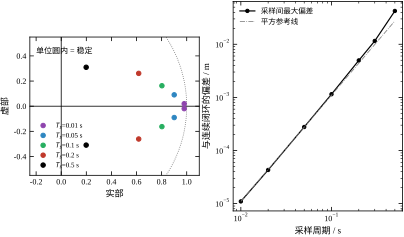
图 54-9 左面板是 z 平面，五组 T_s 对应的极点全部落在单位圆内，并且沿同一条对数螺旋从圆边向内收——模按 e^{-2T_s} 衰减、幅角按 2T_s 张开，越往里 T_s 越大。右面板是偏差随 T_s 的变化，灰虚线是平方参考线，T_s\le0.1 的四个点紧贴它，后面三个点往上翘，正是第三段效应的图形版本。
K_d 的两个分量不是黑箱，手算可以得到同样精度。闭环特征多项式写成 z^2-tz+d，其中 t=\mathrm{tr}(A_d-B_dK_d)、d=\det(A_d-B_dK_d)。B_dK_d 是秩一矩阵，代入秩一更新公式后有两条干净的线性关系：
t=\mathrm{tr}(A_d)-K_dB_d,\qquad d=\det(A_d)\left(1-K_dA_d^{-1}B_d\right)
把 T_s=0.05 的数值代进去：\mathrm{tr}(A_d)=1.856066、\det(A_d)=0.860707、A_d^{-1}B_d=[-0.00131465,\;0.05389981]^{\mathsf T}；目标极点的和是 2\times0.900317=1.800634、积是 0.904838^2=0.818732。两条方程展开为
0.001189k_1+0.046392k_2=0.055432,\qquad -0.001132k_1+0.046392k_2=0.041975
相减消掉 k_2，0.002321k_1=0.013457，得 k_1=5.7984；回代得 k_2=1.0462，与脚本的 [5.798419,\ 1.046234] 在前五位一致，剩下的差别来自上面那些系数的六位截断。
这组方程还回答了“为什么不能乘一个系数换算”这个问题。连续域的两个方程是 (54-20)：k_1=\omega_n^2-2、k_2=2\zeta\omega_n-3，两个增益一个管常数项、一个管一次项，地位对等。离散域里两条方程的系数完全不对称：k_2 的系数在两式里都是 0.046392，而 k_1 的系数一条是 0.001189、另一条是 -0.001132，小一个数量级还反了号。于是 k_1 只能靠两式相减定出来（净系数 0.002321），k_2 则被两式的公共平移锁住。同一对极点，在连续域由 k_1、k_2 对等地决定，在离散域几乎全压在 k_2 上——这就是表 54-2 里 k_1 降 3.4%、k_2 升 4.6% 的代数原因，也是“离散增益必须重算”的硬理由。当 T_s\to0 时，B_d\approx BT_s、A_d^{-1}B_d\approx BT_s，两式的系数与右端同步趋于零（\mathrm{tr}(A_d)\to2、\det(A_d)\to1），K_d 才能趋于 K_c。表 54-5 里 T_s=0.01 时 \|K_d\|=6.0449 与 \|K_c\|=6.0828 只差 0.6%，正是这个极限的数值体现；T_s 再往上加，两条方程的不对称迅速放大，增益就与连续值脱钩了。
离散域有一个连续域没有的选项：把全部极点放到 z=0。z=0 对应 e^{sT_s}=0，即 s\to-\infty，闭环在 n 拍内精确到零，称为死拍（deadbeat）。听起来是最优解——还要什么极点配置，直接拉满不就行了。实跑一遍就知道不行。表 54-6 用同一对象、目标极点 z_{1,2}=0，三个采样周期各算一次 K_d，并跑六拍。
| T_s | K_d | 增益范数 | 首拍 u | 第二拍 u | 第一拍后速度 | 到零的拍数 |
|---|---|---|---|---|---|---|
| 0.050 | [428.929176,\ 29.012498] | 429.909249 | -428.929176 | 370.904179 | -19.991669 | 2 |
| 0.010 | [10148.919167,\ 149.002500] | 10150.012907 | -10148.919167 | 9850.914167 | -99.998333 | 2 |
| 0.005 | [40298.917917,\ 299.001250] | 40300.027134 | -40298.917917 | 39700.915417 | -199.999167 | 2 |
三列数字把问题说尽了。第一，增益按 T_s^{-2} 涨。 T_s 从 0.05 减到 0.01（5 倍），\|K_d\| 从 429.9 涨到 10150（23.6 倍）；再减半到 0.005，\|K_d\| 翻 3.97 倍。采样快一倍，增益就要大四倍，这与连续域“\omega_n 翻倍、k_1 翻四倍”是同一个标度，只不过死拍把 \omega_n 无限推远了。第二，控制量不可实现。 本例执行器 \pm5 N，首拍要 -428.93 N，是量程的 86 倍；T_s=0.005 时要 -40298.9 N。第三，中间状态荒谬。 为了两拍到零，第一拍结束时速度被推到 -19.991669 m/s，意味着 0.05 s 内改变 20 m/s，加速度约 400\ \mathrm{m/s^2}，是重力加速度的 40 倍。真实机构在第二个采样点之前就已经撞限位了。
还有一个更隐蔽的代价。死拍的“两拍到零”依赖模型精确：把执行器增益 B 调偏 1\%（标定误差的常见量级），闭环极点从 1.49\times10^{-8} 跳到 -0.102518，绝对稳定性还在，但“第二拍精确到零”这个承诺作废了——残留按每拍 0.10 衰减，实际要到第五、六拍才看不见。作为对照，常规设计 K_d=[5.798419,\ 1.046234] 的 |z|=0.904837，同样 1\% 的 B 误差下变成 0.904605，几乎不动。常规设计用 6 的增益换了对模型误差的钝感，死拍用 430 的增益换来一个必须精确成立才成立的承诺。
所以死拍在机电系统里基本不用，它真正的舞台是那些“模型由代码本身定义”的场合，比如数字滤波器设计、某些通信均衡器。在本书的物理对象上，它的价值是反面的：它标出了极点配置的可行域边界——把极点推到原点，代价是增益与状态的同步爆炸，而这条边界的位置由 T_s 决定。§54.5.5 那条 \omega_nT_s\le0.2 的经验规则，本质上就是“离原点别太近”的量化版本。
§54.5.6 已经证明 T_s\to0 时 K_d\to K_c，但“增益收敛”不等于“性能收敛”。用 K_d 在离散闭环里跑，按 \sum u_k^2T_s 统计控制能量，与连续值 8.5（精确的 17/2）对照，得到一组很干净的数字：T_s=0.1 时 8.486313，偏差 -0.161\%；T_s=0.05 时 8.496645，-0.039\%；T_s=0.02 时 8.499466，-0.006\%；T_s=0.01 时 8.499867；T_s=0.005 时 8.499967。五组值全部从下方逼近，且偏差随 T_s 近似线性缩小。
峰值也同向：5.594036、5.798419、5.919739、5.959934、5.979983，连续值是 6。T_s=0.1 时峰值低了 6.77\%，T_s=0.05 时低 3.36\%。原因是零阶保持把每一拍的控制量“冻结”了整拍，而连续解在拍内是变化的（u 从 -6 起向零抬升），冻结时用的是一段常数，面积偏低，\sum u_k^2T_s 自然从下面靠近。
这里有一个很容易被误读的地方：离散能量更低，并不代表离散控制更好。 同一批 T_s 下，采样间偏差在涨（§54.5.4 的第三段效应），T_s=0.1 的偏差已经是 T_s=0.01 的近百倍；峰值低 6.8\% 是以“拍内控制量不再更新”为代价换来的。三个指标——能量、峰值、采样间偏差——必须一起看，单看任何一个都会得出错误结论。工程上常用的自检是：把 T_s 减半，若能量与峰值的相对变化都小于 1\%，说明已经进入收敛区，可以按连续设计交付；若还在 3\% 以上，说明采样周期仍参与着性能，不能把 K_c 直接搬上机。
前一节反复出现“稳定”与“性能”两个词，这一节把它们拆开。极点配置的稳定是设计出来的，性能却要另外验；接上观测器之后，这两件事会分道扬镳。
只要 (A,B) 能控、期望极点全在左半平面，闭环 A-BK 就一定稳定。这条结论是代数结果，不需要仿真验证。但它有三个没写进定理的前提：
第三个前提最微妙：分离原理保证“特征值并集”，所以稳定性仍然成立，但只有稳定性成立。下一小节开始就要把“性能”从“稳定”里剥出来。
工程上最常用的换算来自二阶系统：
t_s\approx\frac{4.6}{\zeta\omega_n},\qquad M_p=\exp\left(-\frac{\pi\zeta}{\sqrt{1-\zeta^2}}\right) \tag{54-28}
第一式的 4.6 对应 1% 误差带（5% 带用 3.0），第二式就是 (54-17)。把四组极点代进去，与实测对照，得到表 54-7。
| 期望极点 | \zeta | \omega_n | 预期 t_s | 实测 t_s | 预期 M_p | 实测 M_p |
|---|---|---|---|---|---|---|
| -2\pm\mathrm{j}2 | 0.707 | 2.828 | 2.30 s | 2.328 s | 4.32% | 4.3214% |
| -4,\ -6 | 1.0（主 -4） | — | 1.15 s | 1.414 s | 0 | 0 |
| -1\pm\mathrm{j}0.5 | 0.894 | 1.118 | 4.60 s | 4.514 s | 0.187% | 0.1867% |
| -10,\ -10 | 1.0（-10） | — | 0.46 s | 0.662 s | 0 | 0 |
超调一列几乎完美：两组复极点的误差在 10^{-4} 量级，说明 (54-28) 第二式在本对象上是精确的（它就是二阶系统的解析结果）。调节时间一列则参差：P_1 只差 1.2%，P_3 差 1.9%，但两组实极点分别差了 23% 与 44%。
差额来自初值。4.6/(\zeta\omega_n) 是包络的衰减时间，它假设初值恰好落在衰减最慢的那个模态上、且系数为 1。本例初值是 x_0=[1,0]：位移为 1、速度为零。这个初值在快模态上的投影不为零，而且 x_2(0)=0 意味着 x_1 的初始斜率为零，轨迹“起步就是平的”，比纯指数衰减慢一截。P_2 的 -6 模态衰减极快，x_1 的后期完全由 -4 主导，但前 0.3 s 的“平顶”被算进了调节时间，于是 1.15 s 变成 1.414 s。
结论很实用：这两条公式只用来选极点，不用来验收。验收必须跑一遍仿真，看真实初值下的轨迹。反过来，如果实测与公式差得远超 20%，那说明初值选得不典型，或者模型里有没被极点数捕捉到的零点。
接上观测器后，闭环变成 4 维，极点集合是 \{-2\pm\mathrm{j}2\}\cup\{-10,-12\}，与期望并集的偏差为 0（报告 5）。稳定性没有问题。但轨迹指标变了，表 54-8 是实测。
| 观测器 | \|L\| | 进入 1% 带 | 反向过冲 | \max\lvert u\rvert |
|---|---|---|---|---|
| 全状态（理想） | — | 2.328 s | 0.043214 | 6.000 |
| -5,\ -6 | 8.944 | 2.400 s | 0.051744 | 4.224 |
| -10,\ -12 | 63.891 | 2.266 s | 0.055088 | 6.985 |
| -20,\ -25 | 374.363 | 2.218 s | 0.051475 | 11.499 |
三件事值得逐个看。
过冲变差了，而且不会随观测器加快而改善。 理想情形 4.32%，三组观测器分别 5.17%、5.51%、5.15%，全部比理想大 20% 左右，观测器从 8.9 加到 374 也没能把过冲拉回来。原因是观测器误差 e 通过 BKe 这一项进入状态方程，它相当于一个初值为 e_0=x_0 的附加扰动；e 衰减得再快，它在最初几十毫秒里已经把状态“多推了一把”。分离原理只承诺 e\to0，没承诺 e 在早期足够小。
调节时间几乎不动。 2.400、2.266、2.218 s 围着理想的 2.328 s 小幅波动，反而观测器越快越接近理想。这一列才是分离原理正面作用的体现：e 衰减快了，实际轨迹就更贴近“全状态反馈”的理想轨迹。
控制峰值随观测器加快而上升。 4.224 → 6.985 → 11.499，理想值是 6.000。慢观测器的峰值反而低于理想，因为启动瞬间 \hat{x}=0，控制器“以为”没有偏差，出力的是一小部分；等估计追上来了才补上。最快的那组几乎翻倍，这就是 §54.4.6 提过的 peaking 在轨迹上的表现。
工程含义可以压成一句：观测器极点只调“多快接近理想性能”，不调性能本身。想让超调更小，改 K；想让估计更快跟上，改 L；把 L 加大来“改善动态”是走错了门。
把测量噪声加进来，情况就变成三方博弈。报告 6 给对象加上单位强度的离散白噪声，测三组指标（表 54-9）。
| 误差极点 | \|L\| | 速度误差 rms | 控制量 rms | \max\lvert u\rvert |
|---|---|---|---|---|
| -5,\ -6 | 8.944 | 0.000936 | 0.013565 | 0.0395 |
| -10,\ -12 | 63.891 | 0.010144 | 0.030965 | 0.0906 |
| -20,\ -25 | 374.363 | 0.043627 | 0.074828 | 0.2535 |
| -40,\ -50 | 1739.177 | 0.139533 | 0.182630 | 0.6360 |
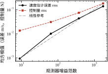
\|L\| 涨了 194 倍，速度误差 rms 涨 149 倍，基本是线性关系（图 54-10 里的灰线就是这个线性参考）。控制量 rms 只涨 13.5 倍，因为控制量里还有“真实状态反馈”这一大块，噪声只是叠加在上面。峰值从 0.0395 涨到 0.6360，16 倍。
把两张表（54-5 与 54-9）并排，得到本章最该记住的一条权衡：
收益线性、代价线性，但两者的斜率不同，所以存在一个最优点。本例里 -10,-12 附近比较平衡：收敛 0.46 s 已经比闭环时间常数 0.5 s 快，噪声放大 10 倍还在可接受范围。再快就只是把噪声搬进执行器。
降维观测器在这里有个结构性劣势，§54.4.7 埋过伏笔：全维观测器的噪声要经过 \hat{x}'=\cdots+L(y-\hat{y}) 这一层积分才影响状态，等于自带低通；降维的 \hat{x}_2=w+3y 是代数直通，噪声一步就到估计值上。所以同样的收敛速度下，降维的噪声上限更硬——这也是工程上“能用全维就用全维，除非算力或阶数真的紧张”的原因之一。
最后一块：模型不准时会怎样。报告 9 把弹簧系数 k 与阻尼系数 c 各在 \pm20\% 内取三档，共 9 种组合，重算闭环极点。
极点对参数的敏感度可以用一阶摄动公式估计：
\delta\lambda_i\approx\frac{v_i^{\mathsf T}\,\delta A\,w_i}{v_i^{\mathsf T}w_i} \tag{54-29}
其中 w_i,v_i 是 \lambda_i 的右、左特征向量。分母 v_i^{\mathsf T}w_i 在特征向量接近平行时很小，敏感度就大——这正是 §54.3.2 里三重极点 cond 高达 9.92\times10^{10} 的同一件事。
报告 9 的结果：P_1=-2\pm\mathrm{j}2 的最坏实部是 -1.700000，相对标称极点的最大位移 0.566150（模长 2.828 的 20%）；P_2=-4,-6 的最坏实部是 -3.181038，最大位移 1.673320（模长 7.2 的 23%）。两组都还在左半平面，稳定性没破，但 P_2 的实部从 -6 弹回到 -3.18，衰减速度打了对折。
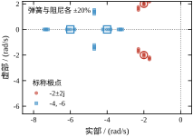
图 54-11 把 9 种组合的极点都画出来。P_1 的散布集中在一小块，P_2 的散布明显更开，而且往右伸得更远。原因不复杂：P_2 的 \|K\|=23.09，是 P_1 的 3.8 倍；增益越大，模型误差被放大得越多。
这条观察常被误读成“极点别选太快”，其实更准确的说法是“高增益换来的性能，要用模型精度去兑付”。如果建模误差有 20%，那么 3.8 倍的增益就意味着 3.8 倍的误差注入，极点必然漂。正确做法不是把极点往回挪（那只是把性能也一起退掉），而是用对模型误差不敏感的增益设计方法——LQR 与鲁棒控制，第 55 章开始讲。
把前面的数字按“从纸面到现场”的顺序排一下，会发现稳定性其实有四个互不等价的版本。第一层是代数稳定：闭环极点是否全在左半平面。这一层用 eig(A-B*K) 一行代码就能回答，本章四组设计全部通过，偏差在 10^{-17} 量级，没有讨论余地。第二层是轨迹性能：真实初值下的超调与调节时间是否达标。表 54-7 显示这一层已经开始出现偏差，实极点那两组的实测调节时间比公式预测长 23% 与 44%，原因是初值 x_2(0)=0 造成的“平顶”。
第三层是接入观测器之后的性能：极点仍然全在左半平面，分离原理保证了这一点，但表 54-8 里过冲从 4.32% 涨到 5.51%，而且把观测器加快 7 倍也压不回来；表 54-9 里噪声又把速度误差 rms 从 0.000936 抬到 0.043627。这一层的结论是“稳定成立、性能打折、噪声付费”，三者同时发生，缺一条都不完整。第四层是摄动与饱和下的稳定：图 54-11 的 9 种参数组合全部留在左半平面，但 P_2 最坏的实部从 -6 弹到 -3.181038；报告 14 的限幅实验里，u 有 164/1200 步被截在 \pm5 N，此时“极点”这个概念严格来说已经不适用，因为系统变成了分段线性。
四层的翻车方式完全不同，所以验收顺序不能颠倒。第一层不过，说明 K 算错了或者 (A,B) 不能控，回到设计；第二层不过，说明极点选得不合指标，或者初值不典型，重选极点；第三层不过，不要回头改 K——分离原理已经说明问题出在 e_0 的早期激励上，改 K 只会把第二层的指标也一起弄坏，正确的动作是调 L、给观测器输出加限幅、或者接受“过冲比设计值大 20%”这个事实并把它写进指标；第四层不过，说明模型的精度撑不起这个增益，该换设计方法而不是继续调参数，这正是第 55 章 LQR 与第 56 章鲁棒控制的入口。
工程上还有一个常见的错误顺序：先做第四层的蒙特卡洛，发现极点漂了就回头把极点往右挪，结果第二层的指标也不达标，来回改。正确的做法是逐层通过、逐层固化：第一层确认增益，第二层确认极点，第三层确认观测器，第四层才动模型与结构。每层只允许改一个东西，这样出问题时才能定位到是哪一层、哪一个参数。
极点位置除了决定超调与调节时间，还决定两件现场更关心的事：闭环能跟多快的参考、以及常值扰动下留多大偏移。这两个指标在本对象上都有闭式，而且都只依赖 \omega_n。
静差。 设有一个常值扰动力 d 经 B 进入对象，平衡点满足 0=(A-BK)x_{ss}+Bd，即 x_{ss}=-(A-BK)^{-1}Bd。代入 A-BK=\begin{bmatrix}0&1\\-(2+k_1)&-(3+k_2)\end{bmatrix}，逆矩阵的第一行乘 B 只剩一项，得到
x_{1,ss}=\frac{d}{2+k_1}=\frac{d}{\omega_n^2}
这个式子把 §54.7.1 的“弹簧”比喻变成了数：闭环静差就是并联后的总刚度 2+k_1 的倒数。四组设计（表 54-7）代进去：k_1=6 给 0.125、k_1=22 给 0.041667、k_1=98 给 0.01，而 P_3 的 k_1=-0.75 只剩 1/1.25=0.8——同样 1 N 的扰动力，P_3 的偏移是 P_1 的 6.4 倍。负增益不只是“看着别扭”，它在静差上是实打实的六倍惩罚。
带宽。 把参考到输出的传递函数 G(s)=N C(sI-A+BK)^{-1}B 的幅频算出来，取 -3 dB 点。四组实测：\omega_n=1.5 给 1.5001、2.5 给 2.5001、2.8284 给 2.8285，比值全是 1.000；而 K=[2,1]（双重极点 -2、\zeta=1）给 1.2872，比值 0.6436。这正好是二阶系统带宽公式
\frac{\omega_B}{\omega_n}=\sqrt{1-2\zeta^2+\sqrt{(1-2\zeta^2)^2+1}}
在 \zeta=0.7071 时取 1、\zeta=1 时取 0.6436 的结果。所以“带宽等于 \omega_n”只对 0.707 附近成立，过阻尼设计要打六四折，拿 \omega_n 当带宽去填采购单会高估 55%。
两个式子合起来是一条直线上的两个点：\omega_n 加倍，静差降到四分之一、带宽翻倍。听起来应该拼命加快，但 §54.6.4 已经给出第三个数——噪声放大随 \|L\| 线性涨，而 \|L\| 又要跟着闭环带宽走，带宽每翻一倍，进执行器的噪声也大致翻一倍。于是“快”这件事在三张账上同时记账：静差变好、跟随变好、噪声变坏。现场的取舍通常不是“要不要快”，而是“噪声预算允许快到哪”。
举个具体对账：若要求“1 N 常值扰动下偏移不超过 0.1 m”，则 \omega_n\ge\sqrt{10}=3.162，对应 k_1=8.0、峰值推力 8 N——已经超出 \pm5 N 量程（§54.3.7 的上界是 2.646）。这条要求在本执行器上无解，只能加积分器把静差从结构上消掉，而不是靠加大 k_1。 这也是第 55 章要从 LQR 与带积分增广的设计讲起的原因：有些指标不是“调参数”能解决的，必须改结构。
这一节回答一个很实际的问题：K、L、N、T_s 这四个数，各自拧动时物理上会发生什么。前三个都是“矩阵”，但它们的每个分量在本对象上都有明确的物理对应物，认出来之后调整就不再是盲调。
对象是 m\ddot{x}+c\dot{x}+kx=u，写成状态方程后 k=2、c=3。加了 u=-k_1x_1-k_2x_2 之后，方程变成
m\ddot{x}+(c+k_2)\dot{x}+(k+k_1)x=0 \tag{54-30}
也就是说，k_1 直接并联在原弹簧上，k_2 直接并联在原阻尼器上。等效刚度是 k+k_1，等效阻尼是 c+k_2。
这个对应让 K 的分量立刻有了物理含义与单位：k_1 的单位是 N/m，k_2 的单位是 N·s/m。四组设计换算成“等效弹簧、等效阻尼”是：
有了这层对应，几个问题变得可以回答：“这个弹簧做得出来吗”（等效刚度是否超出材料与结构极限）、“执行器够不够”（k_1 乘以最大位移就是最大力）、“能不能换成被动实现”（如果能，那就不需要闭环）。极点配置在这里不是黑箱，它只是在改两个物理参数。
k_2 的情形同构：P_1 对应等效阻尼 4 N·s/m，P_2 是 10，P_3 是 2。把 P_1 的 k_2 单独关掉会怎样？k_1=6 使 \omega_n=\sqrt8=2.828，此时阻尼比只剩 3/(2\times2.828)=0.53，超调从 4.3% 跳到 14% 左右——这就是“只调刚度不调阻尼”在实践中几乎总失败的原因。
值得注意的是 k_1 与 k_2 对极点的影响方式不同。由 (54-19)，k_1 只进常数项（影响 \omega_n^2），k_2 只进一次项（影响 2\zeta\omega_n）。所以调 k_1 改速度，调 k_2 改阻尼，两者近似正交。二阶对象上这条正交性很好用：想要更快的响应就加 k_1，想要更少的超调就加 k_2，互不干扰。
高阶对象就没有这种正交性了。n\ge3 时每个增益分量同时进入多个系数，改一个会牵动全部极点，只能靠数值方法（place_poles）联立求解。这是二阶手算经验不能直接推广到高阶的原因。
N 与 K 的作用完全不同：K 改的是特征值（系统的“形状”），N 改的是传递函数的分子（系统的“高度”）。由 (54-22)，N 只出现在参考通道上，闭环极点完全不受它影响。
取错 N 的后果是稳态误差。常见错误是把参考直接加到控制量上（u=-Kx+r）而忘了折算，这时单位阶跃的稳态输出只有 1/N：P_1 是 0.125，P_2 是 0.0417，P_4 是 0.01。极点越远，这个残余误差越小——增益越大，“残余偏差产生的恢复力”越强。但无论多小都不等于零，除非正确乘上 N，或者改用积分器。
N 的量纲在这个单位反馈结构里是无量纲的（它是“参考到控制量”的静态增益）。如果参考带量纲（比如参考位移是 mm 而状态用 m），N 就要带换算系数，这是工程实现里最常见的单位错误之一。
把 L=[l_1,l_2]^{\mathsf T} 代入 A-LC：
A-LC=\begin{bmatrix}-l_1&1\\-2-l_2&-3\end{bmatrix},\qquad \det(sI-A+LC)=s^2+(3+l_1)s+(3l_1+l_2+2) \tag{54-31}
三组设计代进去：L=[8,4] 得 s^2+11s+30，根 -5,-6；L=[19,61] 得 s^2+22s+120，根 -10,-12；L=[42,372] 得 s^2+45s+500，根 -20,-25。三组都精确对上，可以当作复算手段。
结构上有一个不对称：l_1 同时进入一次项与常数项（系数分别是 1 与 3），l_2 只进常数项。原因是 C 只测位移，l_1(y-\hat{y}) 直接加在 \hat{x}_1' 上，被积分一次才影响 \hat{x}_2，所以它对两个系数都有贡献；l_2 直接加在 \hat{x}_2' 上，只影响常数项。
工程含义：l_1 调带宽（一次项），l_2 调两个极点的间距（常数项）。l_1 单独加大时一次项与常数项一起涨，极点整体外移；l_2 单独加大时只有常数项涨，在 s 系数固定的前提下，两个实极点会分得更开。三组数据正好体现这一点：l_2/l_1 从 0.5 涨到 3.2 再到 8.9，两个实极点的间距也从 1（-5 与 -6）拉到 2（-10 与 -12）再到 5（-20 与 -25），三组都是实根、没有虚部，不存在振荡型的估计误差。
T_s 是这四个参数里唯一不在矩阵里的，但它的作用最容易被低估，因为它同时扮演三个角色：
三重身份之间还有耦合：想减小离散化误差要减小 T_s，想减小延迟也要减小 T_s，但 T_s 太小会让增益变大（表 54-5 第一列从 4.0951 涨到 6.0449），对噪声更敏感，同时对算力要求更高。
表 54-5 还藏着一个有用的极限检查：T_s 从 0.5 缩到 0.01 时，\|K_d\| 单调升到 6.0449，而连续设计是 6.0828，只差 0.6\%，并且还在继续逼近。离散设计在采样足够快时必须收敛到连续设计，这是两条独立路径互相验证的最直接证据。若哪天改了代码，发现 T_s=0.01 时 K_d 与 K_c 差得远，那就说明离散化那一步写错了。
表 54-10 把四个参数的量纲列清楚。量纲检查是最便宜的错误过滤器：一个公式写完，先看两边的单位对不对，能挡掉大半的实现错误。
| 参数 | 含义 | 量纲 | 本例数值 |
|---|---|---|---|
| k_1 | 并联弹簧刚度 | N/m | 6（P_1） |
| k_2 | 并联阻尼系数 | N·s/m | 1（P_1） |
| N | 参考前馈增益 | 无量纲 | 8（P_1） |
| l_1 | 位移误差修正权重 | 1/s | 19（-10,-12） |
| l_2 | 速度误差修正权重 | 1/s^2 | 61（-10,-12） |
| l | 降维观测器增益 | 无量纲 | 3 |
| T_s | 采样周期 | s | 0.05 |
用这张表回头验 (54-23)：w'=-6w-20y+u 中 w 的单位是 m/s，w' 是 m/s^2，所以 -6 必须是 1/s（对，它是误差极点）、-20 必须是 1/s^2（对，它由 6\times3+2 组成，6 是 1/s、3 无量纲、2 是 1/s^2 的一部分）。输出方程 \hat{x}_2=w+3y 里 3 无量纲，与表里 l 一行一致。量纲全对，说明 (54-23) 的推导没有漏项。
记住这四句，调参时就不会把“性能不好”和“估计太慢”混为一谈。
“k_1 改速度、k_2 改阻尼”这句话可以写成偏导数。由 (54-19)，闭环极点满足 s^2+(3+k_2)s+(2+k_1)=0，隐函数求导得
\frac{\partial s}{\partial k_1}=\frac{-1}{2s+3+k_2},\qquad \frac{\partial s}{\partial k_2}=\frac{-s}{2s+3+k_2}
在 P_1 的 s=-2+\mathrm{j}2、k_2=1 处，分母 2s+3+k_2=4\mathrm{j}，于是
\frac{\partial s}{\partial k_1}=\frac{\mathrm{j}}{4}=0.25\,\mathrm{j},\qquad \frac{\partial s}{\partial k_2}=-0.5-0.5\,\mathrm{j}
两个数把 §54.7.2 的定性说法变成了定量结论。k_1 的灵敏度是纯虚数：每加 1 N/m，极点只沿虚轴上下移动 0.25 rad/s，实部一点不动。所以“加刚度”确实只改频率、不改衰减，也解释了为什么只调 k_1 会把阻尼比越调越低——\omega_n 涨、实部不动，\zeta=|\mathrm{Re}\,s|/\omega_n 必然下降。k_2 的灵敏度是 -0.5-0.5\mathrm{j}：每加 1 N·s/m，极点向左下移动，实部直接左移 0.5，这才是“加阻尼”的准确图像。用有限差验证：k_1 从 6 加到 7，极点从 -2\pm\mathrm{j}2 变成 -2\pm\mathrm{j}2.236，虚部涨 0.236，与线性预测的 0.25 相符；k_2 从 1 加到 2，极点变成 -2.5\pm\mathrm{j}1.323，实部左移 0.5、虚部降 0.677，前者的线性预测精确命中，后者偏差大是因为步长已经不算小。
这两个式子的分母还解释了另一件事：当 2s+3+k_2\to0 时灵敏度发散，物理上就是两个极点快要重合、特征向量快要平行的时刻。P_1 的分母是 4\mathrm{j}，模为 4，不大不小；若把极点配到接近重根的位置，分母会趋零，同样的增益误差会造成大得多的极点漂移——这与 §54.2.7 用条件数讲的是同一件事，只是换了一阶灵敏度的语言。
工程上这两条偏导数的用法很直接。给定量程与增益步长，就能预估“调一格会走多远”；反过来，要求极点移动多少，就能算出增益该改多少。P_1 处想把实部再往左挪 0.5，只需把 k_2 加 1：极点变成 -2.5\pm\mathrm{j}1.323，\omega_n 仍是 \sqrt{2+k_1}=2.828（它只由 k_1 决定），\zeta 从 0.707 升到 0.884，峰值推力不变（仍是 |k_1|=6），但控制能量会增加，因为修正项在 t>0 的整段上出力更多。调参从此是算出来的，不是试出来的——这也是极点配置相对 PID 的一个实质优势：PID 的三个参数与极点位置之间没有这么干净的显式关系。
同一组极点可以有四组完全不同的 K，取决于你把状态写成什么单位、执行器的增益怎么标定、时间的单位取秒还是毫秒。这四组数在脚本里都验过，闭环特征值全部是 -2\pm\mathrm{j}2。
一般关系只有两条：K_z=K_xT^{-1}、L_z=TL_x。它们说明极点是对象的性质，K 是坐标的产物。这条区别在交接时最要命：文档里只写“K=[6,1]，极点 -2\pm\mathrm{j}2”，接手的人若把位移单位当成 mm，等效刚度就从 6 变成 6000，闭环特征方程成了 s^2+4s+6002=0，极点跑到 -2\pm\mathrm{j}77.460（12.33 Hz），阻尼比 0.0258、超调 92\%——系统还能稳，但响应已经变成一台振荡器。这种错误在曲线上一眼可见，却极难从代码里看出来，因为代码里那个 6 是对的，错的是它乘上去的那个变量。
所以表 54-10 把七个参数的量纲单列成表——那不是装饰。工程交接的最低要求是三句话：状态的定义与单位、B 的标定值、采样周期的单位。有这三句，K 才能被复现；没有这三句，K 只是一串数字。
把 (54-19) 写成特征方程 s^2+(3+k_2)s+(2+k_1)=0，二阶系统的稳定性判据（两个系数同号且为正）立刻给出边界：
k_1>-2,\qquad k_2>-3
这不是近似，是充要条件。四条边界测试可以手算验证：k_1=0、k_2=1 给 s^2+4s+2=0，极点是 -0.585786 与 -3.414214，稳；k_2=-3、k_1=6 给 s^2+8=0，极点是 \pm\mathrm{j}2.828427，等幅振荡；k_1=-2、k_2=1 给 s^2+4s=0，极点是 0 与 -4，落在原点上；再往下 k_1=-2.1 给 s^2+4s-0.1=0，极点变成 +0.024846 与 -4.024846，一正一负，发散。
这张图有两个用处。第一，k_1=0 不是边界。 很多人以为“位置反馈系数必须为正”，但 k_1=0 时极点仍是 -0.585786 与 -3.414214，系统照样稳——它靠的是对象自身的弹簧。真正的边界在 k_1=-2，即“把对象原有的刚度全部抵消掉”。k_2 同理，边界在 -3，即“把原有阻尼全部抵消掉”。这两个数就是 §54.7.1 与 §54.7.2 那两个比喻的定量版本。
第二，稳定域内外的差别不是“稳/不稳”，而是“离翻车有多远”。 本章的 P_1=[6,1] 离两条边界分别是 8 与 4；P_3=[-0.75,-1] 离 k_1 边界只有 1.25。两者的极点都在左半平面，但 P_3 的静差是 0.8（§54.6.7），而且一旦弹簧刚度标定偏小 1 N/m，它就出界了。“稳定”是一个二值判断，“稳不稳得住”要看在参数平面上的余量，这与 §54.2.7 用条件数量化“离不能控有多远”是同一个思路，只是一个在极点空间、一个在增益空间。
顺带一个反直觉的事实：把 k_1 加大到无穷，系统当然还在稳定域内，但增益与噪声同步爆炸（§54.4.3）；把 k_1 减到 -2，系统在边界上振荡。所以稳定域只划出了“允许的范围”，指标与代价要在范围内另外找——这正是 §54.3 的八步流程要在选极点之前先算量程与噪声的原因。
极点配置被叫做“全状态反馈”，听起来只要会解方程就行。真到工程里，难点不在解方程，而在于：选哪组极点、观测器放多快、T_s 取多少、验证顺序怎么排。这一节把顺序讲清楚，并把本章脚本调试时踩过的两个坑完整复盘。
四个参数的依赖关系是单向的：
\text{时域指标}\ \to\ \zeta,\omega_n\ \to\ K\ \to\ T_s\ \to\ L \tag{54-32}
place_poles；反过来做会出问题。假如先拍定 T_s=1 s，再要求极点 -2\pm\mathrm{j}2，则 \omega_nT_s=2.83，离散化误差按表 54-5 的趋势会超过 40%，配出来的 K_d 已经不是原来那个设计了。这类错误在小批量设备上特别常见——采样周期往往是硬件定死的，于是设计者被迫在“改硬件”和“接受误差”之间选，而正确做法是用 T_s 反推能实现的 \omega_n 上限，把性能指标降到可行范围。
给一个具体的换算过程，指标是“1% 调节时间 2 s、超调小于 5%”。
第一步，由 t_s 反算 \zeta\omega_n。 用 (54-28)：\zeta\omega_n=4.6/2=2.3。
第二步，由超调反算 \zeta。 超调 5% 对应 \zeta\approx0.69，取整为 0.707。于是 \omega_n=2.3/0.707=3.25。
第三步，算 K 并检查量程。 代 (54-20)：k_1=3.25^2-2=8.56，k_2=2\times0.707\times3.25-3=1.60，\|K\|=8.71。峰值推力约等于 k_1=8.56 N。若执行器只有 5 N，这组极点不可行，必须把 \omega_n 降下来——按 k_1\approx\omega_n^2+2 反解，k_1\le5 对应 \omega_n\le2.65，t_s 只能做到 4.6/(0.707\times2.65)=2.45 s。
第四步，留一档备选。 再算一组慢 30% 的极点（\omega_n=2.3），留作“实机调试时退化用”。这一档的意义在于：仿真里能过的设计，实机上大概率要往慢里调，事先算好备选可以省掉一轮返工。
这四步的顺序不能颠倒。先算 K 再看量程，等于把“能不能实现”这个硬约束放到最后；先定 \zeta 再定 t_s，则会得到互相矛盾的两组要求。
第一条，比闭环快 2 到 5 倍。 本章取 5 到 6 倍，是偏快的选择。快的收益是估计误差早消失，代价是 §54.6.4 的噪声放大。若测量噪声 rms 已经有标称信号的 1%，就不该超过 3 倍。
第二条，看噪声预算反推。 由表 54-9，速度误差 rms 与 \|L\| 近似成正比。若允许的估计误差是 0.01 m/s，则 \|L\| 不能超过约 60，对应误差极点 -10,-12，不能再快。
第三条，不能超过采样率的五分之一。 这一条在连续设计里看不出来，在离散实现里是硬墙。T_s=0.05 时，观测器极点 -40 映射到 z=e^{-2}=0.135，-100 映射到 z=0.0067，已经贴着原点。极点越靠近原点，离散状态矩阵的特征值越聚集，place_poles 的条件数越差，定点实现里直接溢出。经验上要求
|z_L|=e^{p_LT_s}\ge0.1 \tag{54-33}
即 p_LT_s\le2.3。T_s=0.05 时观测器极点不能快过 -46，这与第二条给的 -40 刚好对得上，不是巧合——两条约束在同一个量级上相遇，说明这个设计点附近的余量本来就不多。
| 症状 | 最可能原因 | 处置 |
|---|---|---|
| 超调比设计值大很多 | N 取错，或执行器限幅 | 先查 N 是否等于 1/(1+\cdots) 的正确值，再看 u 是否触顶 |
| 稳态有静差 | 没加 N，或对象有未建模的常值扰动 | 加 N；若有常值扰动，改用积分器（第 44 章） |
| 输出高频抖动、执行器发热 | L 太大，把噪声放大进控制量 | 降 L 到闭环的 2–3 倍，或在 y 后加低通 |
| 启动瞬间执行器打满 | 观测器 peaking（§54.4.6） | 观测器初值设为首次测量值，或对 \hat{x} 限幅 |
| 离散实现后响应变差 | 用了连续增益（§54.5.3） | 用 K_d，并复算离散闭环极点 |
这张表的用法是“由症状反查”，不是“逐条排查”。工程上最常见的其实只有前两条，后三条属于实现细节，但只要碰上就很难靠调参绕过。
把前面所有内容压成一份可以贴在工位上的清单：
第 7 步是最容易被跳过的一步，也是最能省时间的一步：如果“全状态”与“带观测器”的调节时间差了 50%，那问题一定在观测器，不必去动 K。
本章脚本在调试时踩过两个坑，都属于“数学没错、代码错了”的类型，值得完整记录。
第一个：观测器修正项漏乘 dt。
现象：报告 6（噪声敏感性）输出 nan，并且伴随 RuntimeWarning: overflow encountered in double_scalars。前三组噪声数字正常，第四组直接爆掉。
定位：报告 6 的循环里，状态更新写成了
\hat{x}_{k+1}=A_d\hat{x}_k+B_du_k+L\left(y_k-C\hat{x}_k\right)
看起来很像连续观测器的欧拉离散，但少了一个 dt。在离散系统里，修正项的正确形式是 L\,dt\,(y_k-\hat y_k)——因为连续域里它是 \dot{\hat{x}} 的一部分，乘 dt 才变成增量。漏掉 dt 相当于把增益放大了 1/dt=200 倍，观测器极点被推到 z 平面之外，一步就发散到 10^{300} 量级，再下一步溢出成 nan。
修法：把修正项改成 dt * (L[:, 0] * (y - float((C @ xh)[0])))。改完四组数字全部正常，且随 \|L\| 单调增长，与理论一致。
这个 bug 的教训不在“别忘了 dt”，而在离散实现里所有“连续域看起来对”的项都要重新检查量纲。L(y-\hat y) 的量纲是 m/s（它加在 \dot{\hat x} 上），而 \hat x_{k+1} 的量纲是 m，两者差一个时间因子。若当时先做一次量纲检查，这个 bug 根本不会写进去。
第二个：用浮点比较判断“是否在采样时刻”。
现象：报告 8（采样周期扫描）里，某些 T_s 下的“采样间最大偏差”偶尔为 0 或异常小，换个 T_s 又正常。
定位：采样判据写的是 abs(t/Ts - round(t/Ts)) < 1e-9。这个写法在 t 与 T_s 都是“干净”数时没问题，但 t=k\,dt 是浮点累加出来的，t/T_s 在真值附近有 10^{-16} 量级的抖动。当 t/T_s 恰好落在 n+0.5 附近时，round 的方向会翻转，判定就漏掉一次采样；漏掉的次数随 T_s 变化，于是误差曲线出现无法解释的跳变。
修法：改用整数计数。先算 hold = int(round(Ts/dt))，再用 if k % hold == 0 判断。整数取模没有舍入问题，T_s 是 dt 的整数倍时永远精确。
这个 bug 的教训是：只要是“判断是否落在某个格点上”，就用整数计数，不要用浮点除法加容差。容差取多大都不安全，因为误差分布不是均匀的，某些 k 一定会踩到边界。
两个 bug 有一个共同点：都不是算法错，都是“把连续域的直觉直接翻译成代码”。这也解释了为什么本章坚持“先跑代码后写正文”——正文里那些看起来理所当然的公式，落地时处处是坑。
初学者常犯的错是“一次把所有东西都接上”：K、L、N、噪声、限幅、离散化一起上，然后看着一条乱糟糟的曲线猜原因。
有效率的做法是反过来：先跑理想全状态反馈，确认调节时间与超调和表 54-7 对得上；再接上观测器（不加噪声），确认与理想情形的差异在 20% 以内；再加噪声，确认抖动在预算内；最后离散化，确认采样间偏差按 T_s^2 增长。任何一步对不上就停下来修，不要往下走。
四步各有一个独立的验收数字，这是本章所有实验的设计原则：每一步都要有一个能被单独否定的数字。没有这个数字，调参就退化成试错。
调参时最常听到的一句话是“能不能再快一点”。能不能，其实由两条互相独立的约束共同决定，把它们写成不等式就一目了然。
第一条来自采样。§54.5.5 的经验是 \omega_nT_s\le0.2，即 \omega_n\le0.2/T_s。第二条来自执行器：由 (54-20)，k_1=\omega_n^2-2，而 t=0 的峰值推力就是 k_1（(54-18)），因此量程 u_{\max} 给出 \omega_n\le\sqrt{u_{\max}+2}。把 u_{\max}=5 N 代进去，上限是 \sqrt7=2.646 rad/s；把 T_s 从 0.001 扫到 0.1，两条约束的对照是
| T_s / s | 采样约束 0.2/T_s | 量程约束 \sqrt{u_{\max}+2} | 实际可用 \omega_n | 对应的 t_s |
|---|---|---|---|---|
| 0.001 | 200.00 | 2.646 | 2.646 | 2.46 s |
| 0.005 | 40.00 | 2.646 | 2.646 | 2.46 s |
| 0.010 | 20.00 | 2.646 | 2.646 | 2.46 s |
| 0.020 | 10.00 | 2.646 | 2.646 | 2.46 s |
| 0.050 | 4.00 | 2.646 | 2.646 | 2.46 s |
| 0.100 | 2.00 | 2.646 | 2.00 | 3.25 s |
这张表说明三件事。第一，在本例的量程下，采样周期小到 0.05 s 以下对性能毫无帮助：可用 \omega_n 被量程死死按在 2.646，t_s 停在 2.46 s 不动。此时把控制器换成 1 kHz 也只是多花算力，性能一分不涨。第二，只有 T_s 超过约 0.076 s（即 0.2/2.646）之后，采样才成为瓶颈，T_s=0.1 时可用 \omega_n 掉到 2.0，t_s 退到 3.25 s。第三，两条约束的交叉点是可以事先算出来的：把 0.2/T_s=\sqrt{u_{\max}+2} 解出来，T_s=0.2/\sqrt{u_{\max}+2}，本例是 0.0756 s。低于这个采样周期，再快没有意义；高于它，采样就是唯一的瓶颈。
这张表还能反过来用。若现场要求 t_s=1 s，则由 t_s=4.6/(\zeta\omega_n) 得 \omega_n=6.5，代入 k_1=\omega_n^2-2=40.3，执行器至少要 \pm41 N，同时采样周期不能超过 0.2/6.5=0.031 s。两个条件任何一个不满足，“1 s”这个指标就只是纸面上的数字。调参的第一步不是改增益，而是把这两条预算列出来，看指标到底被谁卡住。 若卡在量程，改增益无用，只能换执行器或放宽指标；若卡在采样，改增益同样无用，只能提高采样率或者接受更慢的响应。
前面各节把工具拆开讲，这一节按真实顺序把它们串一遍。任务是这样下的：小车初始偏移 1 m，要求 2% 调节时间不超过 2 s、超调不超过 5%、推力不超过 \pm5 N、采样周期自选。六个数字从这里开始，一个接一个地算出来。
第一步，指标换成极点。 取 \zeta=0.7071（5% 超调的边界稍下），由 t_s=4/(\zeta\omega_n) 得 \omega_n=2.828427，极点是 -2\pm\mathrm{j}2。这与表 54-3 的第二行完全对齐。再由 (54-20) 得 k_1=\omega_n^2-2=6.000000，k_2=2\zeta\omega_n-3=1.000000，于是 K=[6,1]。
这里必须交代一句判据的版本：本章 §54.3.7 用的是 4/(\zeta\omega_n)，§54.6.2 的 (54-28) 写的是 4.6/(\zeta\omega_n)，后者对应 1% 误差带。同一个 t_s=2 s，按 4.6 反解要 \omega_n=3.252692、k_1=8.580000，量程问题立刻从“超 20%”变成“超 72%”。两个判据差 13%，指标换算时必须写明用的是哪一个，否则需求方与实现方会在量程上吵一架。本例沿用 4 倍判据，全程与表 54-3 保持一致。
第二步，量程对账。 t=0 的推力就是 k_1x_1(0)=6 N，比 \pm5 N 多出 20%。这时有两个选择：把指标放宽到 t_s\ge2.14 s（对应 \omega_n\le2.646，见上表末行），或者保留 K 而在执行器前加限幅。本例选后者，理由是这个工况只在最初两拍饱和，后面的行程远离限幅——这个判断需要第 5 步的实跑来验证，不能凭感觉。
第三步，采样周期。 由 \omega_nT_s\le0.2 得 T_s\le0.070711 s，取 T_s=0.05 s。零阶保持离散化后重算增益，\mathcal{C}_d^{-1}\phi(A_d) 给出 K_d=[5.798419,\,1.046234]，闭环 z 极点是 0.900317\pm\mathrm{j}0.090333。检查模长：|z|=0.904837，正好是 e^{-0.141421}=e^{-2\times0.05}，两个极点落在同一条等阻尼线上。注意 K_d 与连续增益 K 并不相同——第一项差 3.4%，第二项差 4.6%。“先把连续增益算好、离散时直接沿用”是常见错误，T_s 越大偏差越大。
第四步，观测器。 闭环极点模长 2.828，按 3–5 倍取 -10 与 -12。解对偶方程得 L=[19,61]；离散化并检查 p_LT_s\le2.3（这里是 12\times0.05=0.6，安全）后得 L_d=[0.700725,\,1.588568]，离散观测器极点是 0.606531 与 0.548812，即 e^{-10T_s} 与 e^{-12T_s}。四个极点并起来是 \{-2\pm\mathrm{j}2,-10,-12\}，与分离原理的预测一致。
第五步，实跑三组。 全状态反馈：t_s=2.10 s，峰值推力 5.798419 N。带观测器（\hat{x}_0=0、无噪声）：t_s=2.05 s，峰值推力 7.221869 N。带观测器再加 \pm5 N 限幅：t_s=2.10 s，峰值正好 5.000000 N。
三个结果里有两条值得记住。第一，观测器让峰值推力比全状态高了 24.5%（7.221869 对 5.798419）。原因不在极点，而在初值：真实位移是 1 m，观测器却从 0 起步，头几拍 \hat{x}_1 偏小，控制器据此判断“离目标还很远”，于是给得比 k_1x_1(0) 更狠。这个超调在连续域的理论峰值里根本看不到，因为理论峰值默认状态已知。现场若按 k_1x_1(0) 选量程，遇到观测器冷启动时就会饱和。
第二，限幅在这个工况下几乎不付代价：t_s 从 2.05 s 退到 2.10 s，只差一个采样周期。原因是饱和只发生在开头两拍，而这两拍本来就在“加速段”，削掉一点推力只是把加速度曲线压平，没有改变后续的收敛节奏。但如果初始位移是 3 m（§54.4.9 的第四行），峰值会到 18 N，限幅到 5 N 就等于把系统按在饱和区里跑十几拍，t_s 会成倍恶化——同一个限幅器，在不同初值下的代价完全不同。
整条链上的六个数字——\omega_n=2.828427、K=[6,1]、T_s=0.05、K_d=[5.798419,1.046234]、L_d=[0.700725,1.588568]、t_s=2.05/2.10 s——每一个都能被单独否定：\omega_n 错则极点不对，K 错则理想曲线不对，T_s 错则 K_d 与 z 极点对不上，L_d 错则带观测器的曲线与全状态差得远，t_s 对不上则前面某一步一定有问题。这就是 §54.8.7 说的“每步一个可否定数字”的具体样子：不是一句口号，而是六个可以逐项打勾的验收点。
极点配置有三个结构性缺陷，前两节已经陆续碰到，这里集中说明并给出路线。
缺陷一：极点该放哪儿，方法本身不回答。 它只保证“你给的极点能实现”，不保证“你给的极点合理”。§54.8.2 的四步换算法是靠时域指标倒推，但时域指标本身从哪来？还是人拍的。
缺陷二：不管控制代价。 表 54-2 里 P_4 用 99.46 的增益换 0.66 s 的调节时间，值不值？方法不回答。§54.4.3 已经量化了这笔代价随 \omega_n 的三次方增长。
缺陷三：不管鲁棒性。 §54.6.5 显示同样的 \pm20\% 参数误差，P_2 的极点位移是 P_1 的 3 倍。方法不回答“这算不算可接受”。
三条改进路线分别对应这三个缺陷：LQR 解决前两个，H_\infty 与 LTR 解决第三个，结构化设计解决“执行器与传感器受限”的现实约束。
线性二次型调节器（LQR）换了一个问法：不指定极点，而是指定“什么算好”。代价函数写成
J=\int_0^{\infty}\left(x^{\mathsf T}Qx+u^{\mathsf T}Ru\right)dt \tag{54-34}
Q\succeq0 惩罚状态偏离，R\succ0 惩罚控制量。Q 大表示“宁可多花力气也要把状态压住”，R 大表示“宁可慢一点也要省力”。最优解由一个代数 Riccati 方程给出：
A^{\mathsf T}P+PA-PBR^{-1}B^{\mathsf T}P+Q=0,\qquad K=R^{-1}B^{\mathsf T}P \tag{54-35}
解出 P 就得到 K，闭环极点自动落在左半平面，不需要事先指定。
这解决了缺陷一（有明确的优化目标）与缺陷二（控制量进了代价函数）。代价是把“选 n 个极点”换成“选 Q,R 的元素”——自由度反而更少。
在同一个对象上跑五组权重，数字列在表 54-11（scipy.linalg.solve_continuous_are 求解）。
| Q | R | K | \|K\| | 闭环极点 |
|---|---|---|---|---|
| \mathrm{diag}(1,1) | 1 | [0.2361,\ 0.2361] | 0.334 | -2.2361,\ -1.0000 |
| \mathrm{diag}(1,1) | 0.1 | [1.7417,\ 1.7417] | 2.463 | -3.7417,\ -1.0000 |
| \mathrm{diag}(1,1) | 0.01 | [8.1980,\ 8.1980] | 11.594 | -10.1980,\ -1.0000 |
| \mathrm{diag}(10,1) | 0.1 | [8.1980,\ 2.9495] | 8.712 | -2.9747\pm\mathrm{j}1.1615 |
| \mathrm{diag}(1,10) | 0.1 | [1.7417,\ 7.6058] | 7.803 | -10.2404,\ -0.3654 |
前三行最能说明问题：无论 R 怎么变，总有一个极点钉在 -1。原因是 Q=I 使两个状态的权重相同，解出的 k_1=k_2，而本对象在 k_1=k_2=k 时的特征多项式是
s^2+(3+k)s+(2+k)=(s+1)(s+2+k)
一个根恒为 -1，另一个随 k 外移。R 从 1 降到 0.01，k 从 0.236 涨到 8.198，可动的那个极点从 -2.24 挪到 -10.20，钉死的那个一动不动。
这就把 LQR 的本质说清楚了：权重矩阵的结构决定了闭环极点的结构。等权重只能得到“一个固定根 + 一个实根”，想要复极点必须打破对称。第四行把 x_1 的权重加大到 10 倍，立刻出现共轭极点 -2.97\pm\mathrm{j}1.16（\zeta=0.932）；第五行反过来加重 x_2，极点分裂成一快一慢（-10.24 与 -0.365），因为惩罚速度会把慢模态留到最后。
与本章的极点配置对比：P_1=-2\pm\mathrm{j}2 的自由度是“任意选两个复极点”，LQR 的自由度是“选一个 R（或几个权重）”。极点配置能到的地方 LQR 未必到得了，反之 LQR 给出的点也未必是设计者想要的。两者不是替代关系，是“无依据的高自由度”与“有依据的低自由度”之间的取舍。
把 (54-34) 里的 R 推向 0（等价于把 Q 推向无穷），最优解会把所有可动极点推向无穷远，\|K\|\to\infty，正好对应本章的“极点越远、增益越大”。也正因为如此，LQR 不会给出“无限快”的设计——它总会用 R 把代价压住，而极点配置在数学上允许你要求任意快的响应，代价由实现者自己承担。
这条关系有一个实用推论：如果想让 LQR 的极点接近某组指定位置，可以把那组位置对应的 K_0 代回 Riccati 的逆问题，反解出一组 Q,R。工程上更常用的做法是反过来——先用 LQR 算一组，看看极点落在哪，再微调权重。这样得到的增益天然带“代价意识”，比硬指定极点稳。
观测器侧有完全平行的故事。本章的 L 是“指定误差极点”，对应的优化版本是 Kalman 滤波器：给过程噪声与测量噪声的协方差 W,V，最优增益是
L=PC^{\mathsf T}V^{-1}
其中 P 由对偶的 Riccati 方程解出。V 大（测量不可信）时 L 小，估计更平滑；V 小（测量可信）时 L 大，估计更快但更抖。这与 §54.6.4 表 54-9 的权衡是同一条曲线，只是 Kalman 把它变成了“给定噪声统计，最优增益唯一确定”。
两者还有一处结构对应：状态反馈的 K 与观测器的 L 满足同一组方程的对偶形式，A\to A^{\mathsf T}、B\to C^{\mathsf T}、Q\to W、R\to V。这就是 §54.2.4 的对偶性在优化框架里的延续。
LQR 有一个很好的性质：它天然有至少 60^\circ 的相位裕度与 6 dB 的增益裕度（单输入情形）。但这个性质在接上观测器之后会丢失——分离原理只保证特征值，不保证裕度。
回路传递恢复（LTR）就是为此设计的：在观测器设计里人为加大过程噪声 W，使 L 变大，让“观测器+对象”的回路传递函数逼近 LQR 的那个回路，从而把裕度“恢复”回来。代价是噪声放大，又回到表 54-9 那条曲线。
若对象的不确定性有明确的结构（比如参数在区间内变化、有未建模的高频动态），更彻底的办法是 H_\infty 综合：直接把“最坏情况下的闭环增益”作为优化目标。它的代价是数学门槛高、控制器阶数等于对象阶数加权重阶数，工程上往往需要降阶。
本章所有推导都假设 K 的每个元素都可以独立取任意实数。现实中常有约束：只能测一个输出（§54.2.6 的静态输出反馈）、执行器只能分散布置（每个执行器只允许用局部信息）、控制器要用固定阶数实现。
这些约束下“极点可任意配置”的定理全部失效，问题变成非凸优化，通常只能求数值近似解。这也是为什么工业界大量使用 PID（第 44 章）与 MPC（第 58 章）：它们的结构约束是“内建”的，调参维度低，虽然理论上不最优，但工程上好用、好维护。
| 方法 | 你要给什么 | 得到什么 | 主要缺陷 |
|---|---|---|---|
| Ackermann | n 个极点 | K，精确 | 高阶病态，不能重极点 |
place_poles |
n 个极点 | K，数值稳 | 仍不管代价与鲁棒性 |
| LQR | Q,R | K，最优且带裕度 | 极点位置不可直接指定 |
| Kalman | W,V | L，最优 | 需要噪声统计 |
| LTR | LQR + 观测器 | 恢复裕度 | 噪声放大 |
| H_\infty | 不确定性模型 | 鲁棒控制器 | 阶数高，门槛高 |
从这张表往下走，自由度越来越少、依据越来越强。工程上的常见路径是“先用极点配置快速拿到一个能跑的 K，再用 LQR 校核代价与裕度”，而不是一上来就解 H_\infty。第 55 章会沿着 LQR 这条线继续往下讲。
表 54-11 前三行给了三组 Q=I、只改 R 的结果。把它们的轨迹指标补齐（同一初值 x_0=[1,0]），会看到一件很值得警惕的事：
| R | K | \|K\| | \max\lvert u\rvert | \int u^2dt | 进入 1% 带 | 闭环极点 |
|---|---|---|---|---|---|---|
| 1 | [0.2361,\ 0.2361] | 0.334 | 0.236 | 0.0125 | 5.196 s | -2.2361,\ -1 |
| 0.1 | [1.7417,\ 1.7417] | 2.463 | 1.742 | 0.4054 | 4.916 s | -3.7417,\ -1 |
| 0.01 | [8.1980,\ 8.1980] | 11.594 | 8.198 | 3.2951 | 4.708 s | -10.1980,\ -1 |
R 从 1 降到 0.01，增益范数涨了 34.7 倍（0.334 → 11.594），控制能量涨了 264 倍（0.0125 → 3.2951），峰值推力从 0.236 涨到 8.198，可是进带时间只从 5.196 s 缩到 4.708 s，不到 10%。拿它与本章的 P_1 比更刺眼：P_1 的 \|K\|=6.08，只有这组的 52\%，进带时间却是 2.328 s，快了一倍。
原因在极点结构：-1 那个根钉死不动，它对应的时间常数 1 s 决定了整条轨迹的尾巴。把 x_1 写成两个模态之和，x_1(t)=1.1087e^{-t}-0.1087e^{-10.198t}——慢模态的系数是 1.1087，比初值还大，因为它要抵消快模态在 t=0 的贡献。于是 |x_1|<0.01 需要 \ln(110.87)=4.708 s，与表中一致。多出来的 34.7 倍增益全部花在快模态上，而快模态对调节时间几乎没有贡献。
这条现象有两个直接用法。第一，判断一个设计“激进不激进”不能看增益范数，要看最右极点的位置；增益范数只决定峰值推力与噪声放大，不决定快慢。第二，用 LQR 时若发现怎么调 R 都提不上去，先检查是不是有某个模态被权重“忘了”——本例中 Q=I 认为位移与速度同等重要，于是解出的 k_1=k_2，慢根被锁在 -1；把 Q 的第一分量加大到 10（表 54-11 第四行），慢根立刻消失，得到 -2.9747\pm\mathrm{j}1.1615，这才是“真正变快”的做法。改结构比改数值有效，这条经验在极点配置里同样成立：与其把两个极点都往左推 10 倍，不如先确认它们是否被某个物理约束锁住了相对位置。
常见的说法是“极点配置不留裕度，LQR 天然有 60°”。这句话需要拆开验，因为它把两种完全不同的东西混在一起。回路传递函数是 L(s)=K(sI-A)^{-1}B，本章对象的分母固定为 (s+1)(s+2)，分子由 K 决定：K=[k_1,k_2] 给 k_2s+k_1。
先把四组设计的穿越频率与相位裕度算出来。P_1 的 K=[6,1] 给 L=(s+6)/((s+1)(s+2))，幅值穿越在 \omega_c=2（此时 |L|=1 可手算：\sqrt{36+4}=\sqrt{5\times8}），相位 -90^\circ，相位裕度 90.00^\circ。P_4 的 K=[98,17] 给 L=(17s+98)/((s+1)(s+2))，\omega_c=17.734786、相位裕度 81.654707^\circ——增益是 P_1 的 16 倍，裕度只掉 8.35^\circ。所以“增益越大裕度越差”在本例上只是弱相关，幅度并不吓人。
LQR 那一侧更有意思。Q=I 解出的增益满足 k_1=k_2=k，于是分子 k(s+1) 与对象在 -1 的极点精确对消，回路化简成 L(s)=k/(s+2)。R=0.01 的 k=8.198039 给出 \omega_c=7.950336、相位裕度 104.120427^\circ；R=0.001 的 k=29.685959 给出 \omega_c=29.618510、相位裕度 93.863053^\circ。Kalman 不等式 \lvert1+L(\mathrm{j}\omega)\rvert\ge1 保证的“增益裕度不低于 6 dB、相位裕度不低于 60^\circ”在这里兑现为 93.9^\circ 到 104.1^\circ，确实宽裕；随着 k\to\infty，相位裕度从上方趋近 90^\circ，与 P_1 的值重合。
结论要说得准确一些：极点配置不“保证”裕度，但在二阶最小相位对象上，它给出的裕度通常已经够用；它真正的脆弱处是模型误差（§54.6.5 的 23% 极点漂移）与延迟（§54.5.5 的 8^\circ 相位损失），而不是增益与相位的摄动。 裕度是“在回路里插一个未知环节”的度量，模型误差不在回路里，它是被控对象本身变了——用相位裕度去挡参数误差，是把两种扰动搞混了。这也是为什么第 56 章讲鲁棒控制时不从裕度出发，而从“不确定性怎么建模”出发。
§54.6.7 算过一个难看的数：1 N 的常值扰动在 K=[6,1] 下留下 0.125 m 的静差，而要把这个静差压到 0.1 m 以下，需要 \omega_n\ge3.162、k_1=8，推力又超量程。当时给的路是“只能加积分器”。这一节把它算完。
做法是把误差的积分当成第三个状态。令 \xi=\int(r-x_1)\,dt，目标 r=0 时 \dot\xi=-x_1，增广系统是
\dot{x}_a=\underbrace{\begin{bmatrix}0&1&0\\-2&-3&0\\-1&0&0\end{bmatrix}}_{A_a}x_a+\underbrace{\begin{bmatrix}0\\1\\0\end{bmatrix}}_{B_a}u,\qquad x_a=\begin{bmatrix}x_1\\x_2\\\xi\end{bmatrix}
极点仍取 -2\pm\mathrm{j}2，第三个极点放在 -8。Ackermann 公式给出 K_a=[38,\,9,\,-64]——注意第三个分量是负的，符号由 \dot\xi=-x_1 里的负号决定，写代码时最容易在这里翻车。核对极点：-2\pm\mathrm{j}2 与 -8，与设计一致。
实跑最有说服力。同样给 1 N 常值扰动、初值 [1,0,0]，积分增广的稳态位移是 0.000000（末段 1 s 的平均值是 10^{-15} 量级，就是数值零），而无积分器的对照是 0.125000——§54.6.7 的解析值被原样复现。静差被彻底消掉，这是结构性的，不是“调得更好”。
代价也在同一行数字里：峰值推力 38 N，是 k_1x_1(0)=6 N 的 6.3 倍，而且发生在 t=0——积分器把“位移误差的比例增益”从 6 抬到了 38。这个代价不是随便选的，第三个极点放哪儿直接决定它。把 p_3 从 -1 扫到 -16：
| p_3 | K_a | k_1 | 2% 调节时间 | 末段静差 |
|---|---|---|---|---|
| -1 | [10,2,-8] | 10 | 3.274 s | <10^{-8} |
| -2 | [14,3,-16] | 14 | 2.407 s | <10^{-8} |
| -4 | [22,5,-32] | 22 | 2.020 s | <10^{-8} |
| -8 | [38,9,-64] | 38 | 1.849 s | <10^{-8} |
| -16 | [70,17,-128] | 70 | 1.782 s | <10^{-8} |
这张表能读出三条规律。第一，k_1=4|p_3|+6，是严格的线性关系：-1 给 10、-2 给 14、-4 给 22、-8 给 38、-16 给 70，五点全部落在同一条直线上；k_2=|p_3|+1、k_3=-8|p_3| 同样是线性的。第二，t_s 只按双曲规律改善：从 -1 一路推到 -16，推力涨 7 倍，t_s 只从 3.274 s 缩到 1.782 s，收缩 1.49 s；而 -8 这一点已经拿到其中的 1.43 s（96%）。第三，-8 之后的收益基本为零，p_3=-16 用 70 N 换 0.067 s，没有任何工程意义。
所以积分器的参数不该按“让积分环节也快起来”的思路调，而该按“刚好够快”的思路调：积分极点只决定扰动被消掉的速度，它与主极点同量级（-2 到 -4）时通常已经够用，再快只是在为一个不存在的性能指标烧推力。本例若量程只有 \pm5 N，所有五个设计全部不可行，唯一的出路是减小 x_1(0)、加前馈补偿，或者换执行器——积分器能消静差，但它不能凭空造出推力。
还有两个实现上的坑要在设计阶段就想到。一是积分饱和：u 被限幅时 \xi 仍在累积，退出限幅后要很久才能把积起来的部分“吐回去”（§54.10.4 的抗饱和逻辑就是处理这件事）。二是积分器把开环传递函数多了一个原点极点，回路的低频相位少了 90^\circ。把 K_a=[38,9,-64] 代进回路，L(s)=(9s^2+38s+64)/(s(s^2+3s+2))，分子两个零点在 -2.1111\pm\mathrm{j}1.6292；实测幅值穿越在 \omega_c=8.956910，相位裕度 81.607797^\circ。比 P_1 的 90.00^\circ 只掉 8.39^\circ——积分器确实吃相位，但两个零点同时把穿越频率往后推，一进一出，净损失远小于“少 90^\circ”的直觉。不过这个结论依赖 K_a 的具体数值，换一组极点就要重算，不能沿用。
仿真跑通只是第一关。从 .py 到装置，有五件事必须补：执行器饱和、观测器初值、测量噪声、计算延迟、数值精度。这一节逐条给出做法，每条都配一个可以量化验收的数字。
执行器总有量程，控制量一超就削平。问题出在观测器身上：如果代码里观测器用的是“控制器算出来的 u”，而实际施加到对象上的是“削平后的 u”，两者不一致，观测器就在用一个错误的输入预测状态，估计必然偏。
报告 14 把这件事量化了。对象初值 [3,0]，K=[6,1]、L=[19,61]，限幅 \pm5 N，T_s=0.005 s，跑 6 s（1200 步），其中约 160 步处于饱和。三种写法列在表 54-12。
| 写法 | 速度估计最大偏差 | 位移估计最大偏差 |
|---|---|---|
| 用饱和后的 u，初值取首次测量 | 0 | 0 |
| 用饱和后的 u，初值取零 | 6.517822 m/s | 3.000000 m |
| 用未饱和指令，初值取首次测量 | 1.297185 m/s | 0.066926 m |
第一行是零，不是偶然。C=[1,0] 使 y=x_1，观测器的 x_1 分量与真实的 x_1 满足完全相同的差分方程（同一个 A_d、B_d、同一个 u），初始一致时误差恒为零；而速度误差满足 e_2'=-3e_2，初值为零也不会被激发。模型准确、无噪声时，一个正确初始化的观测器是精确的，这条性质在调试时很有用：如果仿真里误差不收敛到零，那一定是 B_d 用错、u 用错或 dt 漏乘（§54.8.6 的第一个 bug 就是这类）。
第三行的 1.297185 m/s 是“用错 u”的代价。饱和只持续了约 0.8 s，但观测器在这段时间里用了一个比实际大得多的输入去预测，速度估计被推高了 1.3 m/s；退出饱和后误差按 -10,-12 衰减，几拍就跟上，可这 1.3 m/s 已经通过 u=-K\hat{x} 进入了控制量。
规则很硬：观测器里必须用限幅之后、真正送到执行器的那个值。实现上就是一行——先把 u 削平并写进输出寄存器，再把同一个变量喂给观测器。
表 54-12 第二行与第一行的差别，全部来自初值。初值取零时，真实状态是 [3,0]、估计是 [0,0]，y-\hat{y}=3，修正项立刻给出 L\times3=[57,183] 的巨大跳变，速度估计在 0.09 s 时偏差达 6.52 m/s，是真实速度峰值的好几倍。这就是 §54.4.6 说的 peaking，只不过在这里被初值放大了。
修法极简单：初始化时把能测到的分量直接赋给估计值。
\hat{x}(0)=\begin{bmatrix}y(0)\\0\end{bmatrix} \tag{54-36}
表征这个效果的是表 54-12 第一行的那两个 0。不能测的分量（这里是速度）只能猜 0，但如果系统在启动前是静止的，猜 0 就是对的；若不静止，应该先做一段“只测量不控制”的初始化，或者用第一次差分的 y 做初值。
饱和期间闭环变成了“开环 + 恒定输入”，极点论证失效。更糟的是积分型或含观测器的控制器会出现积分饱和：误差一直存在，控制器一直要求更大的输出，退出饱和后要花很长时间才能把内部状态退回来。
极点配置本身不含积分器，但观测器有类似的问题：饱和期间估计漂移，退出后要重新收敛。标准做法是两条：
第二条其实就是表 54-12 第一行的推广：不是简单地换成 u_{act}，而是把差值显式地送回控制器内部。对纯状态反馈 + 观测器的结构，直接用 u_{act} 喂观测器已经足够，不需要额外的反算。
测量噪声的放大倍数由 \|L\| 决定（表 54-9）。若已经选了较快的观测器又不想降速，可以在 y 之后加一阶低通：
H_f(s)=\frac{1}{\tau s+1} \tag{54-37}
\tau 的选择有一个明确的下界：滤波引入的相位滞后 \arctan(\omega_c\tau) 会直接吃掉闭环裕度。取 \tau=0.02 s、\omega_c=2.8 rad/s，滞后是 \arctan(0.056)=3.2^\circ，可以接受；取 \tau=0.2 s，滞后 29^\circ，加上 §54.5.5 的计算延迟，回路就危险了。
经验规则是 \tau\le0.1/\omega_c，即滤波带宽至少是闭环带宽的 10 倍。滤波放在 y 之后而不是 \hat{x} 之后，因为放在后面会让观测器继续“看到”噪声、继续放大，等于没滤。
一个控制周期内的顺序不是随便排的，排错会引入额外的延迟。可用的顺序是：
读 y[k] # 采样
x_hat = Ad @ x_hat + Bd * u_prev + Ts * L * (y[k] - C @ x_hat)
u_cmd = -K @ x_hat
u_act = clip(u_cmd, -umax, umax)
写 u_act # 输出，同时保存为 u_prev关键在于观测器用的是上一拍的 u（u_prev），因为本拍的 u 还没算出来。这等价于在观测器通道里多了一拍延迟，误差极点会被轻微影响，但只要 T_s 满足 §54.5.5 的条件就可忽略。
若反过来写成“先算 u 再更新观测器”，看起来少了一拍延迟，实际上是在用本拍的 u 预测本拍的 y，属于用未来信息，在实时系统里做不到，仿真里能跑通、上机就崩。这是“仿真通过、实机失败”最常见的原因之一。
16 位 ADC、量程 \pm5 V、传感器灵敏度 1 V/m 时，一个 LSB 对应
\Delta y=\frac{10}{2^{16}}\approx1.53\times10^{-4}\ \mathrm{V}\ \hat{=}\ 0.153\ \mathrm{mm}
量化噪声的 rms 约 \Delta y/\sqrt{12}=0.044 mm。这个数单独看很小，但乘上 l_1=42（表 54-9 的第三组观测器）就是 1.85 mm/s 的速度修正抖动，与表 54-9 里同一组 0.0436 m/s 的噪声水平同一量级。也就是说：观测器增益大到一定程度，量化噪声会成为主导，此时再提高 ADC 位数比调 L 更有效。
定点实现还要注意两点：状态变量的动态范围要留够（x_1 可能到 3 m，而 T_s L 的乘积可能很小），以及累加器的位宽。这两条不是控制理论问题，但它们在现场造成的故障比理论问题多得多。
表 54-13 是本章建议的实机检查项，与 §54.3.5 的设计期清单互补：那张表管“算得对不对”，这张表管“跑得稳不稳”。
| 检查项 | 通过标准 | 不通过的典型症状 |
|---|---|---|
| 观测器输入用 u_{act} | 与输出寄存器同一个变量 | 饱和后估计偏移、恢复慢 |
| 观测器初值 | \hat{x}_1(0)=y(0) | 启动瞬间控制量打满 |
| u 限幅 | 与执行器物理量程一致 | 超调大、积分饱和 |
| y 前置滤波 | \tau\le0.1/\omega_c | 高频抖动、执行器发热 |
| 计算顺序 | 观测器用 u_prev |
仿真好、实机振 |
| 量化预算 | 量化噪声 \ll 传感器噪声 | 低速时抖、静止时爬行 |
| 饱和时长占比 | <10\% 的运行时间 | 说明极点选得太快 |
最后一行值得单独说：如果实测发现控制器长时间处于饱和，那不是“执行器不够”，而是“极点选得超出了执行器能力”。按 §54.8.2 的第三步反算，把 \omega_n 降到 k_1 能承受的范围，比换一个更大的执行器便宜得多。
把前面八节按时间顺序排一遍，就是一份启动序列。第一步，静置采样。 上电后先不控制，采 1 s 的 y，确认它不漂、噪声在预算内。若这一步 y 的抖动已经超过 §54.10.6 算出的量化噪声 0.044 mm，说明传感器或接地有问题，后面所有调参都是白费。
第二步，自由响应验模型。 用手推一下或给一个已知的初始位移，记录 x_1 的自由衰减，与解析式 x_1(t)=2e^{-t}-e^{-2t}（初值 1 m、速度为零）比对。t=1 s 时理论值是 2e^{-1}-e^{-2}=0.735759-0.135335=0.600424，t=2 s 时是 0.270671-0.018316=0.252355。实测若与这两个数差 10% 以上，A 就不准，极点配置的前提已经不成立，应当先辨识参数，而不是继续往下走。
第三步，初始化观测器。 按 (54-36) 取 \hat{x}_1(0)=y(0)、\hat{x}_2(0)=0。若装置启动时确实静止，这一步就够；若不确定，可以让观测器空跑 0.5 s（只更新、不闭环），等 |\hat{x}_1-y| 连续 10 拍小于 10^{-4} m 再切入。
第四步，小增益闭环。 先把 K 乘一个系数 0<\alpha\le0.3 接进去，跑 10 s，看三件事：控制量是否平滑、估计误差是否收敛、有没有持续饱和。\alpha 小的目的是让第 1 s 内即使初值很大也不会打满。
第五步，切到全增益并盯饱和占比。 报告 14 的实验里，初值 [3,0]、限幅 \pm5 N、K=[6,1]，饱和占 164/1200 步，即 13.7\%，按表 54-13 的最后一行已经超标。这个数字不是“执行器不够”，而是设计时默认的初值 x_0=[1,0] 与现场的 3 m 起步不一致。若现场确实要从 3 m 起步，按 |u(0)|=k_1x_1(0)\le5 反算，k_1\le1.667，即 \omega_n\le1.915，进带时间退到 4.6/(0.707\times1.915)=3.40 s；要么接受这个更慢的指标，要么在前 1 s 用一个随位移缩放的软启动，把“大偏差”这段时间交给开环或低增益。
这五步的顺序有一个原则：每一步只引入一个新东西，并且每一步都有一个可以立刻判死的数字。 静置看噪声 rms，自由响应看 0.600424 与 0.252355，初始化看 |\hat{x}_1-y|，小增益看曲线是否平滑，全增益看饱和占比。任何一步的数字不对，就停在那里查，不要带着问题往下接——这也是 §54.8.7 那条反向经验在硬件上的版本。
把上面七节压成一段可以直接移植的骨架（Python 写法，量与单位都显式标出）：
def control_step(y_meas, u_prev):
"""一个控制周期：输入本拍测量与上拍输出，返回本拍输出。"""
# 1. 观测器：用上一拍真实输出，做一拍预测再修正
x_pred = Ad @ x_hat + Bd * u_prev
x_hat = x_pred + Ts * L * (y_meas - C @ x_pred)
# 2. 状态反馈 + 参考前馈
u_cmd = -K @ x_hat + N * r
# 3. 限幅，并保存实际输出供下一拍使用
u_out = min(max(u_cmd, -umax), umax)
return u_out这三步的顺序不能变：预测—修正—反馈—限幅。任何一步提前或滞后，都会改变有效延迟，而极点配置对延迟没有余量（§54.8.1）。写完这段代码，先用 §54.8.7 的四步验证跑一遍仿真，再上机。
现场最常见的改型是“响应太慢，换个大执行器”。这件事不是把 u_{\max} 从 5 改成 20 就完了，四件事要依次重算，每一步的结论都可能反过来约束上一步。
第一步，重算 \omega_n 的上界。 由 §54.3.7 的第四条边界，\omega_n\le\sqrt{u_{\max}+2}：\pm20 N 给 \sqrt{22}=4.691，比原来的 2.646 宽了 1.77 倍。但四条边界要一起看，T_s=0.05 时采样给的上界仍是 4，所以真正可用的是 4。
第二步，按新上界选极点并核对量程占比。 取 \omega_n=4、\zeta=0.7071，得 K=[14,\ 2.656854]，闭环极点 -2.828427\pm\mathrm{j}2.828427。峰值推力仍是 |k_1|=14 N，占 \pm20 N 的 70\%，留了 30% 给扰动与超调，这个余量是健康的；t_s=4/(\zeta\omega_n)=1.414214 s，比原来的 2.328 s 快 39%。代价也在涨：\int u^2dt=24.759145，是 P_1 的 8.5 的 2.91 倍。
第三步，重算采样周期与离散增益。 \omega_nT_s\le0.2 要求 T_s\le0.05，正好卡在边界上，工程上取 0.04（\omega_nT_s=0.16）。T_s 一改，K_d 必须重算——按 §54.5.6 的结论，它与 K_c 的差别随 T_s 线性增大，直接搬连续增益会引入 3% 量级的极点偏差。
第四步，重配观测器。 观测器极点要跟着闭环一起加快，原来 -10,-12（约 3.5 倍于 \omega_n=2.828）在新设计下只有 2.5 倍，应当推到 -16,-20 一带。代价立刻出现：\|L\| 从 63.891 涨到数百，按表 54-9 的斜率（-10,-12 到 -20,-25 涨 5.86 倍），速度误差 rms 也要涨同样的倍数。换执行器省下的时间，一部分会被观测器噪声吃回去，这就是为什么“换硬件”从来不是单点改动。
还有一个容易被忘掉的约束：如果装置从 3 m 外起步，峰值变成 3k_1=42 N，\pm20 N 又不够了；对应上界退到 \sqrt{20/3+2}=2.944，t_s 回到 1.921 s。“换多大的执行器”这个问题，离开“从多远起步”就没有答案——与 §54.3.7 最后那段是同一条。
幅值限幅削的是“最大能出多大力”，速率限制削的是“力能变多快”。电机绕组的电压变化率、液压阀的行程速度、泵的加减速，都天然带一个 \dot u_{\max}。它在代码里通常只是一行 u = clip(u, u_prev - dmax, u_prev + dmax)，看起来无害，实际是往回路里塞了一个相位滞后的非线性环节。
先看它对纯比例型闭环的影响。用 §54.8.9 的 K_d=[5.798419,1.046234] 与 L_d=[0.700725,1.588568]，T_s=0.05 s，加 \pm5 N 幅值限幅，再叠加不同的 \dot u_{\max}：
| \dot u_{\max} / (N/s) | 每拍允许变化 / N | 2% 调节时间 | 峰值 \lvert u\rvert |
|---|---|---|---|
| 不限 | — | 2.10 s | 5.000 |
| 200 | 10.0 | 2.10 s | 5.000 |
| 60 | 3.0 | 2.10 s | 5.000 |
| 20 | 1.0 | 2.20 s | 5.000 |
| 10 | 0.5 | 2.25 s | 4.000 |
| 5 | 0.25 | 2.40 s | 3.000 |
规律很干净：\dot u_{\max} 只要能在两拍内走完整个量程，就完全没有影响（60 N/s 对应 3 N/拍，5 N 量程不到两拍走完，t_s 一点没变）；再往下压，系统只是“变慢”，t_s 从 2.10 s 单调退到 2.40 s，峰值被压到 3 N，曲线依然单调收敛。对比例型反馈来说，速率限制是个温和的约束。
换成带积分器的闭环，结论完全反过来。 用 §54.9.10 的增广设计（离散化后 K_a=[31.518974,\,7.471024,\,-51.419648]，极点 0.900317\pm\mathrm{j}0.090333 与 0.670320），同样在 u 后加限速：\dot u_{\max}=100 N/s 时系统照常收敛，末段位移峰峰值 1.4\times10^{-17}，就是数值零；把限速压到 20 N/s，系统在头 10 s 就把位移甩到 -5.486\sim11.000 m，之后一直在几十米的量级上摆动（-71.71\sim-24.10 m 这样的区间反复出现），控制量峰值 159.7 N；10 N/s 时同样失稳，后期位移跑到 66.77 m。
这不是数值发散，是极限环：位移与力被限速“锁”在固定节奏上，一圈一圈地转。机制可以这样理解——速率限制让控制器输出的相位落后，而这个相位滞后与积分器带来的低增益相位叠加，把 §54.9.10 算出的 81.6^\circ 裕度一点点吃光；一旦吃穿，回路就靠非线性自己找到了一个新的稳态振荡。纯比例型闭环没有这个隐患，因为它本身没有“要积到多少才算完”的状态；积分器有，而且它会把每一次跟不上的滞后都累加成更大的指令。
三条处置，按推荐顺序：
验收时给一条硬判据：正常工况下限速的触发时间占比应低于 1%。超过这个比例，它就不再是“保护”，而是一个没被建模的环节——而本章所有的极点、裕度、调节时间，都是在“没有这个环节”的前提下算出来的。
极点配置在教科书中地位很高，在工业现场却远不如 PID 常见。这个反差本身就值得解释清楚：它的优点与缺点都非常“结构化”，适合的任务与不适合的任务泾渭分明。
第一，极点是可直接解释的性能指标。 阻尼比与自然频率直接对应超调与调节时间（表 54-7 的误差在 10^{-4} 量级），而 \zeta 与 \omega_n 又能翻译成“并联多大弹簧、多大阻尼”（§54.7.1）。这条链路从“要什么性能”一直通到“装什么元件”，中间没有黑箱。PID 做不到这一点：K_p,K_i,K_d 与超调、调节时间之间只有经验关系。
第二，结果是精确的，不是近似的。 表 54-1 的闭环极点复算偏差是 4.16\times10^{-17}，两条独立路径（Ackermann 与 place_poles）的差在 10^{-15} 量级。这意味着“设计值”与“实现值”之间没有算法误差，剩下的偏差全部来自模型误差与离散化——问题被清晰地分成了两类。
第三，天然支持多变量。 只要 (A,B) 能控，n 个极点可以任意配置，不需要关心输入输出之间怎么配对。多输入多输出的耦合系统里，这个性质非常舒服；PID 在同样场景下要做解耦，工作量往往超过直接上状态空间。
需要完整模型。 (A,B,C) 三个矩阵一个都不能少，且要准。§54.6.5 显示 \pm20\% 的参数误差就让 P_2 的极点位移 1.67；若模型结构本身错了（漏了一个模态），极点配置给出的“精确”就是精确地错。
需要全状态。 实际只能测部分状态，必须补观测器，于是又引入 \|L\| 的噪声放大（表 54-9 的 194 倍）与 peaking（表 54-12 的 6.52 m/s）。观测器不是免费的附件，它把“一个设计问题”变成了“两个互相牵制的设计问题”。
不管控制代价。 表 54-2 里 P_4 用 99.46 的增益换 0.66 s，方法本身不评价这个交换划不划算。§54.4.3 的能量立方律只是把代价算出来给人看，决策还得人做。
不管鲁棒性。 增益越大、极点越远，对模型误差越敏感（§54.6.5 的 3.8 倍对比）。而“更快”恰恰是多数人第一反应会选的改进方向，于是很容易走进“性能越调越好、实机越调越飘”的循环。
高阶数值病态。 Ackermann 公式要算 \mathcal{C}^{-1}，n\ge10 时条件数会让结果失去意义。重极点更糟：三重极点 -1 的特征向量矩阵条件数达 9.92\times10^{10}，1% 的 A 摄动就让极点位移 0.337。这些不是理论缺陷，是“用公式算”的固有代价。
第 44 章的 PID 与本章的极点配置，适用场景可以用三条判据分开：
一个常见的工程现实是：PID 调不动的系统，换成极点配置往往能调动，不是因为算法更强，而是因为它多用了信息（全状态）并且明确指定了目标（极点位置）。如果 PID 也能拿到同样的信息、同样的目标，两者的差距会小很多。
第 58 章与第 80 章的模型预测控制，解决的是本章完全不管的那类问题：约束。执行器有量程、状态有安全边界、变化率有限制——这些在本章里只能靠事后限幅（§54.10.1）打补丁，在 MPC 里是写进优化问题的硬约束。
分界线大致是：
一个粗略的算力判断：MPC 每拍要解一个二次规划，规模随预测步长线性增长；极点配置每拍只做一次矩阵乘法。T_s=0.005 s 的场合，前者往往来不及。
本章从头到尾假设 (A,B) 里没有延迟。真实系统里的传输延迟、执行器响应延迟一旦接近闭环时间常数，极点配置就会失效——它不知道延迟的存在，配出来的极点在实际系统上会右移甚至跑到右半平面。
第 47 章与第 107 章的 Smith 预估器、内模控制，专门处理这类问题。正确的组合方式是先补偿延迟，再对补偿后的等效对象做极点配置，而不是把延迟当噪声硬扛。判断标准很简单：延迟 \tau_d 与闭环时间常数 1/(\zeta\omega_n) 的比值超过 0.2，就该先处理延迟。
| 能做好 | 做不好 |
|---|---|
| 线性、时不变、阶数 n\le10 | 强非线性、时变参数 |
| 模型准确（误差 <10\%） | 模型只有粗略的输入输出关系 |
| 全状态可测或可估 | 关键状态不能观（§54.2.5 的零空间模态） |
| 无硬约束或偶发饱和 | 长期在约束边界运行 |
| 性能指标能用极点表达 | 指标是“最坏情况下的鲁棒性” |
| 单速率采样、T_s 固定 | 多速率、事件触发、网络化控制 |
最后一行常被忽略：本章所有推导都假设采样周期固定、每次采样都拿到新数据。网络化控制里数据会丢包、会乱序，A_d 不再是常数矩阵，极点配置的基本假设就破了。
如果下面任何一条成立，先别急着写 Ackermann：
这五条对应本章的五次“翻车点”：§54.2.4 的不能观模态、§54.4.2 的 k_1 峰值、§54.5.5 的延迟、§54.6.5 的模型误差、§54.7.1 的量程。把它们做成开工前的检查，比事后调参省事得多。
模型、状态、约束这三件事只要有一件不满足，就该考虑替代路线。常见的有四条，每条都有明确的适用面与明确的代价。
增益调度处理“参数慢变”。把工作区间分成若干段，每段线性化、各配一组极点、各算一个 K，运行时按当前工况插值。代价有两块：标定工作量大（每段都要建模、都要验证），以及切换瞬态——两组 K 之间的过渡如果没有处理好，会在切换点产生一个控制量的跳变。判据是参数变化的时间尺度：如果参数变化比闭环时间常数慢十倍以上，调度是安全的；否则切换本身就变成了扰动源。
反馈线性化处理“非线性但模型精确”。用状态变换把非线性系统化成线性，再对线性化后的对象配极点。它的代价是对模型的依赖比本章更强：本章只要 A 准，反馈线性化要求非线性函数本身准，而且要求它的一阶、二阶导数也准。一旦有未建模的动态，线性化会把误差放大成残差项，闭环性能可能比不线性化还差。
自适应控制处理“结构已知、参数未知”。它在线辨识参数并同步调整增益，理论上可以跟踪慢变的参数。代价是稳定性证明复杂、瞬态行为难以保证——参数收敛之前的那段时间里，系统是“边走边学”，性能没有保证。工程上常见做法是“先固定增益跑稳，再打开自适应”，并且给参数估计加投影，防止它跑到不合理的区域。
H_\infty 与 \mu 综合处理“不确定性有界但结构已知”。它把最坏情况下的闭环增益作为优化目标，给出的是“在这个不确定性集合内都稳定”的保证。代价是控制器阶数等于对象阶数加权重阶数，往往需要降阶，而降阶又会破坏原有的保证。
把这四条与本章排在一起看，规律很清楚：极点配置是“信息最全、假设最强、代价最低”的那一端，替代路线每放松一条假设，就要多付一份建模、算力或验证的成本。 所以正确的顺序不是“哪个先进用哪个”，而是先用极点配置把问题跑通、把瓶颈暴露出来，再针对暴露出来的那一条假设换方法：模型不准就上鲁棒，参数慢变就上调度，有硬约束就上 MPC，非线性强就上反馈线性化。反过来，一上来就用 H_\infty 或自适应，往往在还没搞清楚瓶颈在哪的时候，就先把复杂度推到了难以维护的地步。
本章结束时手里应当有三样东西，它们是下一章 LQR 的起点而不只是复习材料。
第一样，一个能跑的对象与一组可比的基准。 (A,B,C)、P_1=[6,1] 的闭环极点 -2\pm\mathrm{j}2、\int u^2dt=8.5、\max|u|=6、t_s=2.328 s。这五个数构成一把尺子：第 55 章解出的任何一组 (Q,R)，都可以直接与它并排比。没有这把尺子，“LQR 好不好”就只能靠感觉。
第二样，一条完整的实现链。 §54.8.9 的 \omega_n\to K\to T_s\to K_d\to L_d\to t_s 六个数，说明“设计”与“上机”之间要过几道关。第 55 章讲执行器饱和下的退化、讲 Q/R 的现场整定，用的仍是这条链——LQR 只是把“选极点”换成“选权重”，后面的采样、观测器、限幅一件不少。
第三样，两把验收工具。 §54.7.10 的稳定域（k_1>-2、k_2>-3）与 §54.9.9 的裕度算法（写回路传递函数、找穿越频率、读相位）。第 55 章会反复出现“R 调小、极点变快、增益变大”的链条，判断它有没有走过头的，就是这两把工具：极点是否仍在稳定域内、裕度是否还够。
反过来说，本章有三件事明确不交给第 55 章：权重怎么选（这是 LQR 自己的问题）、多变量时极点怎么分配（§54.2.8 只给了自由度计数，没给分配规则）、以及噪声统计怎么来（那是第 56 章 Kalman 的输入）。划清“不交”的边界，比列出“交”的清单更能防止两章重复。
如果只能记一句话，就记这一句：模型准、状态全、约束不常触碰——这三条同时成立时用极点配置；任何一条不成立，按不成立的那一条去找替代方法，不要靠调增益硬扛。 本章所有失败的例子，追到底都是这三条里某一条被悄悄破坏了：模型不准（§54.6.5 的 1.67 位移）、状态不全（§54.6.3 的过冲 +20%）、约束常触碰（§54.10.9 的 13.7% 饱和占比）。诊断时先判断是哪一条破了，再决定改什么，这比逐条试参数快得多。
本章的全部数字来自两个文件：code/ch054_sim.py 生成 14 组报告，code/ch054_figs.py 生成 11 张插图。前者只依赖 NumPy 与 SciPy，后者额外依赖项目内的三个样式模块。这一节讲清楚代码为什么这么写，以及怎么移植。
ch054_sim.py 只做数值，不画图、不写文件，结果全部 print 到终端。这样做的理由有三条：
ch054_figs.py 只画图，所有数据都通过 import ch054_sim as cs 调用前者的函数重算，不读任何缓存文件。这保证了“图上看到的”与“正文写的”是同一次计算的产物。图的导出统一走 plot_styles.save()，同时生成 SVG 与 PDF，前者给 HTML，后者给印刷。
能控矩阵、能观矩阵、特征多项式、多项式在矩阵上取值，这四个是后面所有算法的砖块：
def ctrb(Am, Bm):
"""能控性矩阵 [B, AB, ..., A^(n-1)B]。"""
n = Am.shape[0]
cols = [Bm]
for _ in range(n - 1):
cols.append(Am @ cols[-1])
return np.hstack(cols)
def obsv(Am, Cm):
"""能观性矩阵 [C; CA; ...; CA^(n-1)]。"""
n = Am.shape[0]
rows = [Cm]
for _ in range(n - 1):
rows.append(rows[-1] @ Am)
return np.vstack(rows)
def polyvalm(coef, Am):
"""多项式在矩阵上取值，Horner 法。"""
out = coef[0] * np.eye(Am.shape[0])
for c in coef[1:]:
out = out @ Am + c * np.eye(Am.shape[0])
return outpolyvalm() 用 Horner 法而不是“逐项乘 A^k”，原因是后者要做 n 次矩阵乘法，前者只要 n-1 次，而且避免了 A^k 在高阶时的数值放大。这个细节在 n\le4 时看不出来，在 n=20 时差别很大。
Ackermann 公式的实现只有三行，把 (54-10) 逐字翻译：
def ackermann(Am, Bm, poles):
"""K = e_n^T * Ctrb^{-1} * phi(A)。"""
n = Am.shape[0]
phi = np.poly(np.asarray(poles, dtype=complex))
phi = np.real_if_close(phi).real
e_n = np.zeros((1, n))
e_n[0, -1] = 1.0
return np.real(e_n @ np.linalg.inv(ctrb(Am, Bm)) @ polyvalm(phi, Am))观测器增益完全不需要新代码，转置对偶就够了：
def observer_gain(Am, Cm, poles):
"""对偶形式求 L，使 eig(A - L C) = poles。"""
return ackermann(Am.T, Cm.T, poles).T这四行是 §54.2.4 的直接体现。写代码时如果想让“对偶”这件事更醒目，可以把 ackermann 的签名拆成 place_gain(A, B, poles) 与 place_dual(A, C, poles) 两个名字，但实现仍是一行——对偶在数学上是恒等，在代码上也应该是恒等。
SciPy 已经有 place_poles，本章仍然手写一份，目的不是替代，而是互证。表 54-2 里“与 place_poles 之差”这一列（2.665\times10^{-15}、1.776\times10^{-15}、2.220\times10^{-16}）就是互证的产物：两条独立路径给出同一个答案，量级正好是双精度舍入误差，说明两者都没有算法错误。
这种互证在工程代码里值得保留。它的成本很低（二十行），收益是“当结果不对时，能立刻判断是算法错还是数据错”。
手写版本还有一个教学价值：它把“能控矩阵必须可逆”这个前提暴露在 np.linalg.inv 上。一旦 (A,B) 不能控，这里直接抛 LinAlgError，比 place_poles 的报错更直白。
\int_0^\infty u^2dt 可以直接对仿真轨迹做梯形积分，但本章用的是 Lyapunov 方程：
def cl_energy(Am, Bm, Km, x0):
"""状态反馈的 ∫u^2 dt 与 max|u|，前者用 Lyapunov 方程精确求。"""
Ac = Am - Bm @ Km
W = solve_continuous_lyapunov(Ac.T, -(Km.T @ Km))
J = float(x0 @ W @ x0)
...理由是一致性与精度：数值积分的结果依赖步长，同一个设计换个 dt 就得到不同数字，正文里那些六位有效数字（8.500000、29.833333）就没法保证。Lyapunov 方程给的是解析值，
J=x_0^{\mathsf T}Wx_0,\qquad A_c^{\mathsf T}W+WA_c=-K^{\mathsf T}K \tag{54-38}
误差只有求解器本身的舍入。P_2 的 29.833333 恰好是 179/6，这个“整齐”就是解析解的痕迹，数值积分给不出这种数。
峰值 \max|u| 没有对应的解析式，只能密采样（4001 点、8 s）。这里用密采样是安全的，因为 \max|u| 在本对象上出现在 t=0（§54.4.2），采样再稀也不会漏掉；若换一个峰值在内部的系统，就要改成先解析求 \dot u=0 的时刻。
def zoh(Am, Bm, Ts):
"""零阶保持离散化，用增广矩阵指数精确计算。"""
n, m = Bm.shape
Mx = np.zeros((n + m, n + m))
Mx[:n, :n] = Am
Mx[:n, n:] = Bm
E = expm(Mx * Ts)
return E[:n, :n], E[:n, n:]这就是 (54-25) 的逐字实现。不用 scipy.signal.cont2discrete 的理由是：那个函数要先把状态空间转成传递函数再转回来，多了一次数值变换；增广矩阵指数一次算完，且对多输入（m>1）自动成立，不需要改代码。
expm 用的是 Padé 近似加缩放平方法，对本章的 2\times2、3\times3 矩阵误差在机器精度。若移植到嵌入式，可以用一阶近似 A_d\approx I+AT_s 或二阶近似 I+AT_s+(AT_s)^2/2，代价是引入了截断误差——这正是表 54-5 第三列在 T_s 大时超平方增长的来源之一。
每组报告是一个无参数、无返回值的函数，内部自己构造需要的对象。这样写的代价是有少量重复（每个报告都要重新算一次 K），收益是任何一组都可以单独运行：调试时把 main() 里其他调用注释掉，只留有问题的那一组，几秒钟就能跑完。
14 组的顺序按“设计流程”排，与正文的节序一一对应：
| 报告 | 对应正文 | 主要产出 |
|---|---|---|
| 1 | §54.1、§54.4.1 | K、能量、峰值、超调、调节时间 |
| 2 | §54.4.3 | 能量与 \omega_n 的幂律 |
| 3 | §54.4.6 | 观测器增益与收敛时间 |
| 4 | §54.4.7 | 降维观测器的系数 |
| 5 | §54.6.3 | 分离原理的极点并集与轨迹 |
| 6 | §54.6.4 | 噪声放大 |
| 7 | §54.5.3 | K_d 与 K_c 的差别 |
| 8 | §54.5.4 | 采样周期三段效应 |
| 9 | §54.6.5 | 参数摄动 |
| 10 | §54.2.6 | 输出反馈的极点约束 |
| 11 | §54.2.4 | 不能观模态 |
| 12 | §54.3.2 | 重极点的病态 |
| 13 | §54.11 | 口径对照 |
| 14 | §54.10.1 | 限幅与观测器一致性 |
除第 13 组是纯文字外，其余 13 组都输出可被正文直接引用的数字。
ch054_figs.py 的头部固定三行 sys.path.insert，把项目根、styles/、code/ 都加进搜索路径，于是可以同时 import flow_styles as fs 与 import ch054_sim as cs。三条约定必须遵守：
第一，三种图不能混用样式模块。 数据曲线走 plot_styles，框图走 flow_styles，流程与泳道也走 flow_styles。混用会让字体、线宽、箭头风格在同一本书里不一致。
第二，图内文字不能同时含中文与公式。 matplotlib 的 mathtext 遇到中文字符会报 Font 'default' does not have a glyph。本章 11 张图全部改成纯文本："$\\Sigma$" 写成 "求和"，"$\\|K\\|$" 写成 "增益范数"，"$z=e^{sT_s}$" 写成 "z = exp(s Ts)"。公式留在图注与正文里，图内只用文字。
第三，图号必须与正文出现顺序一致。 本章初稿曾经把“闭环响应”排成图 3、“输出反馈”排成图 10，结果正文里图 3 的引用出现在图 10 之后，读者要来回翻。正确的做法是先在正文里按讲述顺序写下图号，通读一遍确认顺序，再按顺序重命名绘图函数与输出文件。
MATLAB 的对应关系几乎是逐行的：ctrb、obsv、place、acker、lyap、c2d 都是内置函数。唯一要注意的是 acker 与 place 的分工：前者只适合单输入、低阶，后者支持多输入与指定特征向量。
移植到 C（嵌入式）时，工作量集中在三件事：
place_poles 那类特征结构配置，避开求逆；这也解释了为什么极点配置适合嵌入式：所有重活都在离线完成，在线每拍只做两次小矩阵乘法，T_s=0.005 s 在 100 MHz 的单片机上绰绰有余。
"D:\Anaconda3\envs\py311\python.exe" code\ch054_sim.py
"D:\Anaconda3\envs\py311\python.exe" code\ch054_figs.py第一条约 5 秒（主要耗时在报告 12 的 200 次摄动采样与报告 6 的噪声仿真），第二条约 3 秒（11 张图，含两次 expm 密集调用）。两个脚本都不写中间文件，重跑是幂等的。
若只想看某一组结果，把 main() 里对应的一行留下、其余注释掉即可；若想改参数扫一遍，最方便的位置是 main() 上方的模块级常量（M、KSPR、CDAMP），改完所有报告一起变，避免“改了 A 忘了改 B”这类不一致。
读完上面的代码，容易产生两个相反的印象：要么觉得“太简陋，连个类都没有”，要么觉得“够用了，为什么不再加点”。这一节说明四个“没做”的决定，以及每个决定背后的理由。
第一，没有引入符号推导。 用 sympy 可以把 (54-10) 展开成 k_1,k_2 的显式表达式，看起来更“严谨”。但没有这么做，原因是：符号结果在 n\ge4 时迅速膨胀，一张纸印不下；而本章真正需要的两处闭式（(54-20) 的 k_1,k_2 与 §54.4.8 的轨迹）都是手推的，推完直接用数字代入验证。符号推导适合“要一个公式”，数值验证适合“要一个可信的数字”，两者不该混在同一个脚本里。 如果哪天需要推广到一般 n，正确的工具是计算机代数系统单独跑一遍，把结果作为常数抄回来，而不是让主脚本依赖它。
第二，没有做单位库。 工程代码里常见的做法是引入一个 pint 之类的量纲库，让每次乘法都带单位检查。本章没这么做，代价是要靠命名约定与表 54-10 人工核对，收益是代码可以直接对着公式读。对一本讲算法的书来说，后者更重要：读者需要看到 u = -(K @ x) 这样的式子，而不是 u = -(K @ x).to(newton)。真正的工程代码里，单位库是值得的，但那是另一层工程规范，不该塞进算法示例。
第三，没有把控制器封装成类。 control_step() 是一个裸函数，所有状态（x_hat、u_prev）都放在外部。这样写不符合软件工程的习惯，但符合本章的目的：每个变量都能在正文里找到对应符号。封装成类之后，self.x_hat 与 \hat{x} 的对应关系会被打断，读者要来回查。等代码要进产品时，再封装不迟，而且那时封装的形式取决于具体的调度框架，提前设计往往是白费。
第四，没有引入测试框架。 本章用三重互证代替 pytest：Ackermann 与 place_poles 互相校验（差 10^{-15}）、Lyapunov 能量与解析值 17/2 对照、闭式轨迹与仿真对照（e^{-\pi}=0.043214）。这三条覆盖了“算法对不对、代价算得对不对、轨迹算得对不对”三个层面，成本是几十行断言，收益是不引入额外依赖。测试的价值在于“能独立否定一个结论”，而不在于用了什么框架。
代码的价值一半在“能跑”，一半在“好改”。下面六个改动都只需要改一行，适合用来建立手感，每个都给出预期现象，便于自查是否改对了。
第一，把弹簧刚度从 2 改成 3。 改 KSPR = 3.0，重跑报告 1。开环极点从 -1,-2 变成 (-3\pm\sqrt5)/2，即 -0.382 与 -2.618；能控性不变，所以四组极点仍能配上，但 K 会变——因为 (54-19) 的常数项从 2+k_1 变成 3+k_1，同样的极点需要小 1 的 k_1。若发现 K 没变，说明代码里有硬编码的 2，那就是 bug。
第二，把传感器换成测速度。 改 C = np.array([[0.0, 1.0]])，重跑报告 3 与报告 5。能观性矩阵仍满秩（\mathcal{O}=\begin{bmatrix}0&1\\-2&-3\end{bmatrix}，行列式 2），所以全维观测器照样能设计，只是 L 的两个分量含义互换；但 §54.4.7 的降维公式 w'=-6w-20y+u 会失效，因为它假设 y=x_1。这个实验最能说明“降维观测器的系数是绑定 C 的”。
第三，把观测器推到 -30,-40。 改报告 6 的极点列表，重跑。按表 54-9 的趋势，速度误差 rms 会从 0.043627 继续上升，控制量 rms 也会涨，而收敛时间只快一点点。预期是“收益递减、代价线性”，若你看到 rms 反而下降，多半是噪声的随机种子变了，不是算法变了——报告 6 用的是固定种子的离散白噪声，改极点不应该改变噪声序列本身。
第四，把采样周期改成 0.15 s。 改报告 7 的 Ts，重跑。此时 \omega_nT_s=0.42，已经越过 §54.5.5 的第一条判据，K_d 会明显偏离 K_c，采样间偏差也会脱离 T_s^2 律。这个实验用来体会“离散设计不是连续设计的微调”。
第五，把限幅从 \pm5 N 收紧到 \pm2 N。 改报告 14 的 umax，重跑。饱和步数会从 164/1200 大幅上升，三行写法的差距也会拉大——尤其是“用未饱和指令”那一行，速度偏差会从 1.297185 m/s 继续往上走。限幅越紧，“观测器必须用 u_{act}”这条规则越重要，这是本章最值得亲手验证的一条。
第六，把三重积分器的极点换成三重 -2。 改报告 12 的极点列表，重跑。特征向量矩阵的条件数会继续停在 10^{10} 量级（重极点的通病），极点位移也会同量级。若改成 -2,-2.001,-2.002，条件数会骤降好几个数量级——这个对比最能说明“重合”与“接近重合”在数值上是两回事。
六个实验都不需要改算法，只改常数。做完之后，再回头看正文里的每一个数字，就不再是“书上说的”，而是“我复现过的”。这也是本章坚持“先跑代码后写正文”的最终目的：让每个结论都有一条可以自己走一遍的路径。